几何体的面积、体积与展开 由几何体参数和展开关系求面积体积，注意旋转后重叠部分。
奉贤 · 第5题 ★☆☆☆☆ · 教师预估 已知圆锥的高为 8，底面半径为 6，则该圆锥的侧面积为___.
考点： 圆锥母线与侧面积。难度依据： 圆锥母线与侧面积
展开答案与解析 【答案】 60 π {60\pi } 60 π
【解析】
【分析】 根据勾股定理求出母线长, 再根据圆锥的侧面积公式求解即可.
【详解】 因为圆锥的高为 8,底面半径为 r = 6 r = 6 r = 6
所以圆锥的母线长为 l = 8 2 + 6 2 = 10 l = \sqrt{{8}^{2} + {6}^{2}} = {10} l = 8 2 + 6 2 = 10
则圆锥的侧面积 S = π r l = π × 6 × 10 = 60 π S = {\pi rl} = \pi \times 6 \times {10} = {60\pi } S = π r l = π × 6 × 10 = 60 π
故答案为: 60 π {60\pi } 60 π
宝山 · 第5题 ★☆☆☆☆ · 教师预估 将边长为 2 的正方形绕其一边旋转一周，所得几何体的体积为___.
考点： 正方形旋转所得圆柱体积。难度依据： 正方形旋转所得圆柱体积
展开答案与解析 【答案】 8 π {8\pi } 8 π
【解析】
【详解】 边长为 2 的正方形绕其一边旋转一周, 得到的几何体为圆柱, 则圆柱的体积为 V = π × 2 2 × 2 = 8 π V = \pi \times {2}^{2} \times 2 = {8\pi } V = π × 2 2 × 2 = 8 π 8 π {8\pi } 8 π
崇明 · 第10题 ★★★★☆ · 教师预估 如图,已知圆柱的一个截面边界是椭圆 Γ \Gamma Γ Γ \Gamma Γ A C {AC} A C A B {AB} A B Γ \Gamma Γ y = 1 − 3 sin x 2 y = 1 - \sqrt{3}\sin \frac{x}{2} y = 1 − 3 sin 2 x Γ \Gamma Γ
B B B
考点： 圆柱斜截面与展开；周期振幅确定圆柱尺寸；椭圆离心率。难度依据： 圆柱斜截面与展开；周期振幅确定圆柱尺寸；椭圆离心率
展开答案与解析 【答案】 21 7 \frac{\sqrt{21}}{7} 7 21
【解析】
【分析】 由正弦函数的最值和周期求得圆柱的高和底面半径, 进而求得椭圆的长轴和短轴, 即可得离心率.
【详解】 函数 y = 1 − 3 sin x 2 y = 1 - \sqrt{3}\sin \frac{x}{2} y = 1 − 3 sin 2 x [ 1 − 3 , 1 + 3 ] \left\lbrack {1 - \sqrt{3},1 + \sqrt{3}}\right\rbrack [ 1 − 3 , 1 + 3 ] T = 2 π 1 2 = 4 π T = \frac{2\pi }{\frac{1}{2}} = {4\pi } T = 2 1 2 π = 4 π
依题意,圆柱的高 h = ∣ A B ∣ = 2 3 h = \left| {AB}\right| = 2\sqrt{3} h = ∣ A B ∣ = 2 3 r r r 2 π r = 4 π {2\pi r} = {4\pi } 2 π r = 4 π r = 2 r = 2 r = 2
椭圆短轴长 2 b = 2 r = 4 {2b} = {2r} = 4 2 b = 2 r = 4 b = 2 b = 2 b = 2 2 a = h 2 + ( 2 r ) 2 = 2 7 {2a} = \sqrt{{h}^{2} + {\left( 2r\right) }^{2}} = 2\sqrt{7} 2 a = h 2 + ( 2 r ) 2 = 2 7 a = 7 a = \sqrt{7} a = 7 e = a 2 − b 2 a = 1 − b 2 a 2 = 21 7 e = \frac{\sqrt{{a}^{2} - {b}^{2}}}{a} = \sqrt{1 - \frac{{b}^{2}}{{a}^{2}}} = \frac{\sqrt{21}}{7} e = a a 2 − b 2 = 1 − a 2 b 2 = 7 21
普陀 · 第8题 ★★★☆☆ · 教师预估 在 A B C {ABC} A BC ∠ A C B = π 2 , A C = 1 \angle {ACB} = \frac{\pi }{2},{AC} = 1 ∠ A CB = 2 π , A C = 1 A A A l / / B C l//{BC} l // BC A B C {ABC} A BC l l l Ω \Omega Ω Ω \Omega Ω 4 3 π \frac{4}{3}\pi 3 4 π Ω \Omega Ω
考点： 旋转组合体的体积和表面积。难度依据： 旋转组合体的体积和表面积
展开答案与解析 【答案】 ( 5 + 5 ) π \left( {5 + \sqrt{5}}\right) \pi ( 5 + 5 ) π
【解析】
【分析】 将 △ A B C \bigtriangleup {ABC} △ A BC l l l Ω \Omega Ω
【详解】 △ A B C \bigtriangleup {ABC} △ A BC ∠ A C B = π 2 \angle {ACB} = \frac{\pi }{2} ∠ A CB = 2 π A C = 1 {AC} = 1 A C = 1 l / / B C l//{BC} l // BC A A A
设 B C = h {BC} = h BC = h A B = A C 2 + B C 2 = 1 2 + h 2 = 1 + h 2 {AB} = \sqrt{A{C}^{2} + B{C}^{2}} = \sqrt{{1}^{2} + {h}^{2}} = \sqrt{1 + {h}^{2}} A B = A C 2 + B C 2 = 1 2 + h 2 = 1 + h 2
将 △ A B C \bigtriangleup {ABC} △ A BC l l l Ω \Omega Ω
所以圆柱上底面半径 R = A C = 1 R = {AC} = 1 R = A C = 1 h h h
被挖去的圆锥的底面半径 r = 1 r = 1 r = 1 h h h
则圆柱体积: V 圆柱 = π R 2 h = π ⋅ 1 2 ⋅ h = π h {V}_{\text{ 圆柱 }} = \pi {R}^{2}h = \pi \cdot {1}^{2} \cdot h = {\pi h} V 圆柱 = π R 2 h = π ⋅ 1 2 ⋅ h = πh
圆锥体积: V 圆锥 = 1 3 π r 2 h = 1 3 π ⋅ 1 2 ⋅ h = 1 3 π h {V}_{\text{ 圆锥 }} = \frac{1}{3}\pi {r}^{2}h = \frac{1}{3}\pi \cdot {1}^{2} \cdot h = \frac{1}{3}{\pi h} V 圆锥 = 3 1 π r 2 h = 3 1 π ⋅ 1 2 ⋅ h = 3 1 πh
所以组合体体积: V = V 圆柱 − V 圆锥 = π h − 1 3 π h = 2 3 π h V = {V}_{\text{ 圆柱 }} - {V}_{\text{ 圆锥 }} = {\pi h} - \frac{1}{3}{\pi h} = \frac{2}{3}{\pi h} V = V 圆柱 − V 圆锥 = πh − 3 1 πh = 3 2 πh
则 2 3 π h = 4 3 π ⟹ h = 2 \frac{2}{3}{\pi h} = \frac{4}{3}\pi \implies h = 2 3 2 πh = 3 4 π ⟹ h = 2 B C = 2 {BC} = 2 BC = 2 A B = 1 2 + 2 2 = 5 {AB} = \sqrt{{1}^{2} + {2}^{2}} = \sqrt{5} A B = 1 2 + 2 2 = 5
几何体 Ω \Omega Ω
圆柱的侧面积: S 柱侧 = 2 π R h = 2 π ⋅ 1 ⋅ 2 = 4 π {S}_{\text{ 柱侧 }} = {2\pi Rh} = {2\pi } \cdot 1 \cdot 2 = {4\pi } S 柱侧 = 2 π R h = 2 π ⋅ 1 ⋅ 2 = 4 π
圆柱的上底面面积: S 上底 = π R 2 = π ⋅ 1 2 = π {S}_{\text{ 上底 }} = \pi {R}^{2} = \pi \cdot {1}^{2} = \pi S 上底 = π R 2 = π ⋅ 1 2 = π
圆锥的侧面积: 圆锥母线长为 A B = 5 , S 锥侧 = π r l = π ⋅ 1 ⋅ 5 = 5 π {AB} = \sqrt{5}\;,\;{S}_{\text{ 锥侧 }} = {\pi rl} = \pi \cdot 1 \cdot \sqrt{5} = \sqrt{5}\pi A B = 5 , S 锥侧 = π r l = π ⋅ 1 ⋅ 5 = 5 π
所以总表面积: S 总 = S 柱侧 + S 上底 + S 锥侧 = 4 π + π + 5 π = ( 5 + 5 ) π {S}_{\text{ 总 }} = {S}_{\text{ 柱侧 }} + {S}_{\text{ 上底 }} + {S}_{\text{ 锥侧 }} = {4\pi } + \pi + \sqrt{5}\pi = \left( {5 + \sqrt{5}}\right) \pi S 总 = S 柱侧 + S 上底 + S 锥侧 = 4 π + π + 5 π = ( 5 + 5 ) π
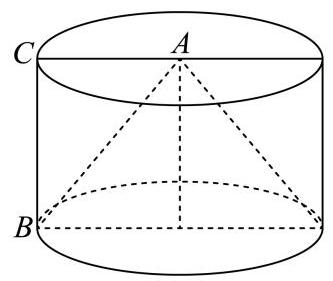
杨浦 · 第7题 ★★☆☆☆ · 教师预估 已知圆锥的底面半径为 1,体积为 3 π 3 \frac{\sqrt{3}\pi }{3} 3 3 π
考点： 由体积求高、母线和侧面积。难度依据： 空间几何量计算
展开答案与解析 【答案】 2 π {2\pi } 2 π
【解析】
【分析】 先由题干条件计算圆锥的高, 再求圆锥的母线, 进而可求圆锥的侧面积.
【详解】 由题得圆锥底面积 S 底 = π R 2 = π {S}_{\text{ 底 }} = \pi {R}^{2} = \pi S 底 = π R 2 = π V = 1 3 S h = 1 3 π h = 3 π 3 V = \frac{1}{3}{Sh} = \frac{1}{3}{\pi h} = \frac{\sqrt{3}\pi }{3} V = 3 1 S h = 3 1 πh = 3 3 π h = 3 h = \sqrt{3} h = 3 l = R 2 + h 2 = 1 + 3 = 2 l = \sqrt{{R}^{2} + {h}^{2}} = \sqrt{1 + 3} = 2 l = R 2 + h 2 = 1 + 3 = 2 S 侧 = π R l = 2 π {S}_{\text{ 侧 }} = {\pi Rl} = {2\pi } S 侧 = π Rl = 2 π
故答案为: 2 π {2\pi } 2 π
虹口 · 第2题 ★☆☆☆☆ · 教师预估 已知一个直三棱柱的侧棱长为 2，底面面积为 2，则该三棱柱的体积为___.
考点： 直三棱柱体积。难度依据： 直三棱柱体积
展开答案与解析 【答案】 4
【解析】
【分析】 根据三棱柱的体积公式计算求解.
【详解】 设一个直三棱柱的侧棱长为 h = 2 h = 2 h = 2 S = 2 S = 2 S = 2 V = S h = 2 × 2 = 4 V = {Sh} = 2 \times 2 = 4 V = S h = 2 × 2 = 4
长宁 · 第15题 ★★★★☆ · 教师预估 本题资料或解析有待核事项，预览不可作为已审定成品。
将下列平面图形沿等边三角形的边折起，不能折成如图所示几何体的是( ).
A.
B.
D.
C.
考点： 几何体展开图。难度依据： 几何体展开图
核查说明： 解析关于B能否折叠前后矛盾，需回查题图和原解，不据此确定。
展开答案与解析 【答案】 B
【解析】
【详解】 该几何体上的点 M , N M, N M , N A , B , D \mathrm{A},\mathrm{B},\mathrm{D} A , B , D
而对于 B \mathrm{B} B M M M N N N
闵行 · 第3题 ★☆☆☆☆ · 教师预估 已知球的表面积为 4 π {4\pi } 4 π
考点： 球表面积与体积。难度依据： 球表面积与体积
展开答案与解析 【答案】 4 3 π \frac{4}{3}\pi 3 4 π
【解析】
【分析】 根据球体表面积计算公式求出球体半径, 再根据球体体积计算公式求出球体体积即可.
【详解】 设球体的半径为 R R R 4 π R 2 = 4 π {4\pi }{R}^{2} = {4\pi } 4 π R 2 = 4 π R = 1 R = 1 R = 1 4 3 π R 3 = 4 3 π \frac{4}{3}\pi {R}^{3} = \frac{4}{3}\pi 3 4 π R 3 = 3 4 π
故答案为: 4 3 π \frac{4}{3}\pi 3 4 π
静安 · 第1题 ★☆☆☆☆ · 教师预估 直径为 22 c m {22}\mathrm{\;{cm}} 22 cm c m 2 {\mathrm{{cm}}}^{2} cm 2 π \pi π
考点： 球表面积。难度依据： 球表面积
展开答案与解析 【答案】 484π
【解析】
【详解】 由题意知球的半径 r = 1 l c m r = 1\mathrm{{lcm}} r = 1 lcm
所以球的表面积 S = 4 π r 2 = 4 π × 11 2 = 484 π c m 2 S = {4\pi }{r}^{2} = {4\pi } \times {11}^{2} = {484\pi c}{m}^{2} S = 4 π r 2 = 4 π × 11 2 = 484 π c m 2
黄浦 · 第3题 ★★☆☆☆ · 教师预估 底面半径为 1 、母线长为 3 的圆锥的侧面展开图中扇形的中心角为___.
考点： 圆锥侧面展开。难度依据： 圆锥侧面展开
展开答案与解析 【答案】 2 π 3 \frac{2\pi }{3} 3 2 π
【解析】
【分析】 根据圆锥的侧面展开图结合扇形的弧长公式运算求解.
【详解】 设侧面展开图中扇形的中心角为 a a a
由题意可得: 3 a = 2 π × 1 {3a} = {2\pi } \times 1 3 a = 2 π × 1 a = 2 π 3 a = \frac{2\pi }{3} a = 3 2 π
所以侧面展开图中扇形的中心角为 2 π 3 \frac{2\pi }{3} 3 2 π
黄浦 · 第11题 ★★★★☆ · 教师预估 本题资料或解析有待核事项，预览不可作为已审定成品。
在空间直角坐标系 O − x y z O - {xyz} O − x yz { ( x , y , z ) ∥ x ∣ ≤ 1 , ∣ y ∣ ≤ 1 , ∣ z ∣ ≤ 1 } \left\{ {\left( {x, y, z}\right) \left.\parallel x\right| \leq 1,\left| y\right| \leq 1,\left| z\right| \leq 1}\right\} { ( x , y , z ) ∥ x ∣ ≤ 1 , ∣ y ∣ ≤ 1 , ∣ z ∣ ≤ 1 } z < 1 z < 1 z < 1 S S S ∣ O P → ∣ ≤ 3 \left| \overrightarrow{OP}\right| \leq \sqrt{3} OP ≤ 3 { Q ∣ O Q → = λ O P → , λ ∈ [ 0 , 1 ] } ∩ S = ∅ \{ Q \mid \overrightarrow{OQ} = \lambda \overrightarrow{OP},\lambda \in \left\lbrack {0,1}\right\rbrack \} \cap S = \varnothing { Q ∣ OQ = λ OP , λ ∈ [ 0 , 1 ] } ∩ S = ∅ { P } \{ P\} { P } P P P
考点： 射线可达点集；球体体积。难度依据： 射线可达点集；球体体积
核查说明： 射线可达区域及体积分解需独立数学核验。
展开答案与解析 【答案】 20 + 2 3 π 3 \frac{{20} + 2\sqrt{3}\pi }{3} 3 20 + 2 3 π
【解析】
【分析】 首先判断出 S \mathrm{S} S ∣ O P → ∣ ≤ 3 \left| \overrightarrow{OP}\right| \leq \sqrt{3} OP ≤ 3 P P P O O O S \mathrm{S} S
【详解】 点集 { ( x , y , z ) ∥ x ∣ ≤ 1 , ∣ y ∣ ≤ 1 , ∣ z ∣ ≤ 1 } \{ \left( {x, y, z}\right) \parallel x \mid \leq 1,\left| y\right| \leq 1,\left| z\right| \leq 1\} { ( x , y , z ) ∥ x ∣≤ 1 , ∣ y ∣ ≤ 1 , ∣ z ∣ ≤ 1 } S \mathrm{S} S z < 1 z < 1 z < 1 z = 1 z = 1 z = 1 ∣ O P → ∣ ≤ 3 \left| \overrightarrow{OP}\right| \leq \sqrt{3} OP ≤ 3 P P P 3 \sqrt{3} 3 1 2 + 1 2 + 1 2 = 3 \sqrt{{1}^{2} + {1}^{2} + {1}^{2}} = \sqrt{3} 1 2 + 1 2 + 1 2 = 3
所以这个球刚好也是正方体的外接球， { Q ∣ O Q → = λ O P → , λ ∈ [ 0 , 1 ] } \left\{ {Q\left| {\;\overrightarrow{OQ} = \lambda \overrightarrow{OP}}\right. ,\lambda \in \left\lbrack {0,1}\right\rbrack }\right\} { Q OQ = λ OP , λ ∈ [ 0 , 1 ] } O P {OP} OP
条件 “ { Q ∣ O Q → = λ O P → , λ ∈ [ 0 , 1 ] } ∩ S = ∅ \left\{ {Q \mid \overrightarrow{OQ} = \lambda \overrightarrow{OP},\lambda \in \left\lbrack {0,1}\right\rbrack }\right\} \cap S = \varnothing { Q ∣ OQ = λ OP , λ ∈ [ 0 , 1 ] } ∩ S = ∅ { P } \{ P\} { P } O P {OP} OP S \mathrm{S} S P P P
考虑从 O O O O P {OP} OP 1 6 \frac{1}{6} 6 1
射向 S \mathrm{S} S 1 6 \frac{1}{6} 6 1
所以所求几何体的体积为 V = 5 × 1 6 × 2 3 + 1 6 × 4 3 π ( 3 ) 3 = 20 3 + 2 3 3 π = 20 + 2 3 π 3 V = 5 \times \frac{1}{6} \times {2}^{3} + \frac{1}{6} \times \frac{4}{3}\pi {\left( \sqrt{3}\right) }^{3} = \frac{20}{3} + \frac{2\sqrt{3}}{3}\pi = \frac{{20} + 2\sqrt{3}\pi }{3} V = 5 × 6 1 × 2 3 + 6 1 × 3 4 π ( 3 ) 3 = 3 20 + 3 2 3 π = 3 20 + 2 3 π
截面 y = 0 y = 0 y = 0
平行垂直与位置关系证明 运用线面判定或空间结构证明位置关系，反向命题须核反例。
崇明 · 第17题 ★★★☆☆ · 教师预估 本题资料或解析有待核事项，预览不可作为已审定成品。
如图，在直三棱柱 A B C − A 1 B 1 C 1 {ABC} - {A}_{1}{B}_{1}{C}_{1} A BC − A 1 B 1 C 1 A B = B C = 2 {AB} = {BC} = \sqrt{2} A B = BC = 2 A C = A A 1 = 2 {AC} = {A{A}_{1}} = 2 A C = A A 1 = 2 D D D E E E A C , A 1 C 1 {AC},{A}_{1}{C}_{1} A C , A 1 C 1
(1)证明: D C 1 / / D{C}_{1}// D C 1 // A B E {ABE} A BE
(2)求三棱锥 C 1 − A B E {C}_{1} - {ABE} C 1 − A BE
考点： (1) 平行四边形及线面平行判定；(2) 等体积转换求棱锥体积。难度依据： 线面平行与等体积法
核查说明： 答案解析第468字符附近：损坏字符或字体覆盖风险，需回源并视觉检查（底稿扫描记录）
展开答案与解析 【答案】 (1) 证明见解析
(2) 1 3 \frac{1}{3} 3 1
【解析】
【分析】 (1) 由题意可得四边形 A D C 1 E {AD}{C}_{1}E A D C 1 E D C 1 / / A E D{C}_{1}//{AE} D C 1 // A E
(2)由 E E E A 1 C 1 {A}_{1}{C}_{1} A 1 C 1 V C 1 − A B E = V A 1 − A B E {V}_{{C}_{1} - {ABE}} = {V}_{{A}_{1} - {ABE}} V C 1 − A BE = V A 1 − A BE
【小问 1 详解】
由直三棱柱性质可得 A 1 C 1 = A C , A 1 C 1 / / A C {A}_{1}{C}_{1} = {AC},{A}_{1}{C}_{1}//{AC} A 1 C 1 = A C , A 1 C 1 // A C
由 D , E D, E D , E A C , A 1 C 1 {AC},{A}_{1}{C}_{1} A C , A 1 C 1 C 1 E = A D , C 1 E / / A D {C}_{1}E = {AD},{C}_{1}E//{AD} C 1 E = A D , C 1 E // A D
则四边形 A D C 1 E {AD}{C}_{1}E A D C 1 E D C 1 / / A E D{C}_{1}//{AE} D C 1 // A E
又 A E ⊂ {AE} \subset A E ⊂ A B E , D C 1 ⊄ {ABE}, D{C}_{1} \not\subset A BE , D C 1 ⊂ A B E {ABE} A BE D C 1 / / D{C}_{1}// D C 1 // A B E {ABE} A BE
【小问 2 详解】
由 A B = B C = 2 , A C = 2 {AB} = {BC} = \sqrt{2},{AC} = 2 A B = BC = 2 , A C = 2 A B 2 + B C 2 = A C 2 {A{B}^{2}} + {B{C}^{2}} = {A{C}^{2}} A B 2 + B C 2 = A C 2
故 A B C {ABC} A BC D D D A B {AB} A B 1 2 B C = 2 2 \frac{1}{2}{BC} = \frac{\sqrt{2}}{2} 2 1 BC = 2 2
则点 E E E A 1 B 1 {A}_{1}{B}_{1} A 1 B 1 d = 2 2 d = \frac{\sqrt{2}}{2} d = 2 2
由 E E E A 1 C 1 {A}_{1}{C}_{1} A 1 C 1 A 1 {A}_{1} A 1 C 1 {C}_{1} C 1 A B E {ABE} A BE
故 V C 1 − A B E = V A 1 − A B E = V E − A 1 B A = 1 3 S △ A 1 B A ⋅ d = 1 3 × 1 2 × 2 × 2 × 2 2 = 1 3 {V}_{{C}_{1} - {ABE}} = {V}_{{A}_{1} - {ABE}} = {V}_{E - {A}_{1}{BA}} = \frac{1}{3}{S}_{\bigtriangleup {A}_{1}{BA}} \cdot d = \frac{1}{3} \times \frac{1}{2} \times 2 \times \sqrt{2} \times \frac{\sqrt{2}}{2} = \frac{1}{3} V C 1 − A BE = V A 1 − A BE = V E − A 1 B A = 3 1 S △ A 1 B A ⋅ d = 3 1 × 2 1 × 2 × 2 × 2 2 = 3 1
普陀 · 第13题 ★★☆☆☆ · 教师预估 已知直线 l 、 m l\text{ 、 }m l 、 m a a a m ⊂ a m \subset a m ⊂ a l l l m m m l / / a l//a l // a
A. 充分非必要条件必要条件
B. 必要非充分条件
C. 充分必要条件
D. 既非充分又非必要
考点： 必要条件与反例；线线及线面位置关系。难度依据： 必要条件与反例；线线及线面位置关系
展开答案与解析 【答案】 B
【解析】
【分析】 根据线面判断及线线位置关系结合必要非充分条件定义判断.
【详解】 当直线 l l l a a a m m m l l l m m m l / / a l//a l // a
若 l / / a l//a l // a l l l a a a l l l m m m
所以“ l l l m m m l / / a l//a l // a
长宁 · 第3题 ★★☆☆☆ · 教师预估 已知向量 a → = ( x , 2 , 3 ) \overrightarrow{a} = \left( {x,2,3}\right) a = ( x , 2 , 3 ) b → = ( 2 , y , 6 ) \overrightarrow{b} = \left( {2, y,6}\right) b = ( 2 , y , 6 ) a → ⊥ b → \overrightarrow{a}\bot \overrightarrow{b} a ⊥ b x + y = x + y = x + y =
考点： 空间向量垂直与数量积；空间线线垂直。难度依据： 空间向量垂直与数量积；空间线线垂直
展开答案与解析 【答案】 -9
【解析】
【详解】 因为 a → = ( x , 2 , 3 ) , b → = ( 2 , y , 6 ) \overrightarrow{a} = \left( {x,2,3}\right) ,\overrightarrow{b} = \left( {2, y,6}\right) a = ( x , 2 , 3 ) , b = ( 2 , y , 6 ) a → ⊥ b → \overrightarrow{a} \bot \overrightarrow{b} a ⊥ b
所以 a → ⋅ b → = 2 x + 2 y + 3 × 6 = 0 \overrightarrow{a} \cdot \overrightarrow{b} = {2x} + {2y} + 3 \times 6 = 0 a ⋅ b = 2 x + 2 y + 3 × 6 = 0
则 x + y = − 9 x + y = - 9 x + y = − 9
黄浦 · 第13题 ★★★☆☆ · 教师预估 若 a , b a, b a , b a / / b a//b a // b a a a a ⊂ a , b ⊂ a a \subset a, b \subset a a ⊂ a , b ⊂ a
A. 充分非必要条件
B. 必要非充分条件
C. 充要条件
D. 既非充分也非必要条件
考点： 空间直线共面条件；充分条件。难度依据： 空间直线共面条件；充分条件
展开答案与解析 【答案】 A
【解析】
【分析】 根据空间中线、面关系结合充分、必要条件分析判断.
【详解】 若 a / / b a//b a // b a , b a, b a , b a a a a ⊂ a , b ⊂ a a \subset a, b \subset a a ⊂ a , b ⊂ a
若存在平面 a a a a ⊂ a , b ⊂ a a \subset a, b \subset a a ⊂ a , b ⊂ a a , b a, b a , b a / / b a//b a // b a a a a ⊂ a , b ⊂ a a \subset a, b \subset a a ⊂ a , b ⊂ a
空间角、距离与体积综合 保留完整空间大题，综合线面关系、坐标和体积计算。
嘉定 · 第18题 ★★★☆☆ · 教师预估 本题资料或解析有待核事项，预览不可作为已审定成品。
如图，在 A B C {ABC} A BC ∠ A C B = 90 ∘ \angle {ACB} = {90}^{ \circ } ∠ A CB = 90 ∘ D A ⊥ {DA}\bot D A ⊥ A B C {ABC} A BC M M M N N N A C {AC} A C D B {DB} D B
(1)求证: M N ⊥ A C {MN}\bot {AC} MN ⊥ A C
(2)若 A C = B C = A D = 2 {AC} = {BC} = {AD} = 2 A C = BC = A D = 2 M N {MN} MN A B D {ABD} A B D
考点： (1) 空间垂直关系证明；(2) 建系求直线与平面所成角。难度依据： 空间建系求线面角
核查说明： 题干与答案解析尚未逐页对照原卷，数学内容未独立终审。
展开答案与解析 【答案】 (1) 证明见解析
(2) π 6 \frac{\pi }{6} 6 π
【解析】
【分析】 (1) 建立适当空间直角坐标系,设 A C = a , B C = b , A D = c {AC} = a,{BC} = b,{AD} = c A C = a , BC = b , A D = c M N → , A C → \overrightarrow{MN},\overrightarrow{AC} MN , A C M N → ⋅ A C → = 0 \overrightarrow{MN} \cdot \overrightarrow{AC} = 0 MN ⋅ A C = 0 M N ⊥ A C {MN} \bot {AC} MN ⊥ A C
(2)求出平面 A B D {ABD} A B D n → \overrightarrow{n} n sin θ = ∣ cos ⟨ M N → , n → ⟩ ∣ \sin \theta = \left| {\cos \langle \overrightarrow{MN},\overrightarrow{n}\rangle }\right| sin θ = cos ⟨ MN , n ⟩ M N {MN} MN A B D {ABD} A B D θ \theta θ
【小问 1 详解】
由题可建立如图所示的空间直角坐标系. 设 A C = a , B C = b , A D = c {AC} = a,{BC} = b,{AD} = c A C = a , BC = b , A D = c
则 C ( 0 , 0 , 0 ) , A ( − a , 0 , 0 ) , B ( 0 , b , 0 ) , D ( − a , 0 , c ) , M ( − a 2 , 0 , 0 ) , N ( − a 2 , b 2 , c 2 ) C\left( {0,0,0}\right) , A\left( {-a,0,0}\right) , B\left( {0, b,0}\right) , D\left( {-a,0, c}\right) , M\left( {-\frac{a}{2},0,0}\right) , N\left( {-\frac{a}{2},\frac{b}{2},\frac{c}{2}}\right) C ( 0 , 0 , 0 ) , A ( − a , 0 , 0 ) , B ( 0 , b , 0 ) , D ( − a , 0 , c ) , M ( − 2 a , 0 , 0 ) , N ( − 2 a , 2 b , 2 c )
所以 M N → = ( 0 , b 2 , c 2 ) , A C → = ( a , 0 , 0 ) \overrightarrow{MN} = \left( {0,\frac{b}{2},\frac{c}{2}}\right) ,\overrightarrow{AC} = \left( {a,0,0}\right) MN = ( 0 , 2 b , 2 c ) , A C = ( a , 0 , 0 )
所以 M N → ⋅ A C → = 0 × a + b 2 × 0 + c 2 × 0 = 0 , ∴ M N ⊥ A C \overrightarrow{MN} \cdot \overrightarrow{AC} = 0 \times a + \frac{b}{2} \times 0 + \frac{c}{2} \times 0 = 0,\therefore {MN} \bot {AC} MN ⋅ A C = 0 × a + 2 b × 0 + 2 c × 0 = 0 , ∴ MN ⊥ A C
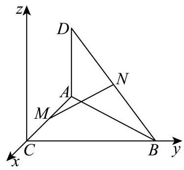
【小问 2 详解】
∵ A C = B C = A D = 2 \because {AC} = {BC} = {AD} = 2 ∵ A C = BC = A D = 2
∴ C ( 0 , 0 , 0 ) , A ( − 2 , 0 , 0 ) , B ( 0 , 2 , 0 ) , D ( − 2 , 0 , 2 ) , M ( − 1 , 0 , 0 ) , N ( − 1 , 1 , 1 ) \therefore C\left( {0,0,0}\right) , A\left( {-2,0,0}\right) , B\left( {0,2,0}\right) , D\left( {-2,0,2}\right) , M\left( {-1,0,0}\right) , N\left( {-1,1,1}\right) ∴ C ( 0 , 0 , 0 ) , A ( − 2 , 0 , 0 ) , B ( 0 , 2 , 0 ) , D ( − 2 , 0 , 2 ) , M ( − 1 , 0 , 0 ) , N ( − 1 , 1 , 1 )
∴ M N → = ( 0 , 1 , 1 ) , ∣ M N → ∣ = 0 2 + 1 2 + 1 2 = 2 , A B → = ( 2 , 2 , 0 ) , A D → = ( 0 , 0 , 2 ) \therefore \overrightarrow{MN} = \left( {0,1,1}\right) ,\left| \overrightarrow{MN}\right| = \sqrt{{0}^{2} + {1}^{2} + {1}^{2}} = \sqrt{2},\overrightarrow{AB} = \left( {2,2,0}\right) ,\overrightarrow{AD} = \left( {0,0,2}\right) ∴ MN = ( 0 , 1 , 1 ) , MN = 0 2 + 1 2 + 1 2 = 2 , A B = ( 2 , 2 , 0 ) , A D = ( 0 , 0 , 2 )
记平面 A B D {ABD} A B D n → = ( x , y , z ) \overrightarrow{n} = \left( {x, y, z}\right) n = ( x , y , z )
则 { n → ⋅ A D → = 2 z = 0 n → ⋅ A B → = 2 x + 2 y = 0 \left\{ \begin{matrix} \overrightarrow{n} \cdot \overrightarrow{AD} = {2z} = 0 \\ \overrightarrow{n} \cdot \overrightarrow{AB} = {2x} + {2y} = 0 \end{matrix}\right. { n ⋅ A D = 2 z = 0 n ⋅ A B = 2 x + 2 y = 0 x = 1 x = 1 x = 1 y = − 1 , z = 0 y = - 1, z = 0 y = − 1 , z = 0
∴ n → = ( 1 , − 1 , 0 ) , ∣ n → ∣ = 1 2 + ( − 1 ) 2 + 0 2 = 2 \therefore \overrightarrow{n} = \left( {1, - 1,0}\right) ,\left| \overrightarrow{n}\right| = \sqrt{{1}^{2} + {\left( -1\right) }^{2} + {0}^{2}} = \sqrt{2} ∴ n = ( 1 , − 1 , 0 ) , n = 1 2 + ( − 1 ) 2 + 0 2 = 2
记直线 M N {MN} MN A B D {ABD} A B D θ \theta θ
则 sin θ = ∣ cos ⟨ M N → , n → ⟩ ∣ = ∣ M N → ⋅ n → ∣ ∣ M N → ∣ ∣ n → ∣ = ∣ 0 × 1 + 1 × ( − 1 ) + 1 × 0 ∣ 2 × 2 = 1 2 \sin \theta = \left| {\cos \langle \overrightarrow{MN},\overrightarrow{n}\rangle }\right| = \frac{\left| \overrightarrow{MN} \cdot \overrightarrow{n}\right| }{\left| \overrightarrow{MN}\right| \left| \overrightarrow{n}\right| } = \frac{\left| 0 \times 1 + 1 \times \left( -1\right) + 1 \times 0\right| }{\sqrt{2} \times \sqrt{2}} = \frac{1}{2} sin θ = cos ⟨ MN , n ⟩ = MN ∣ n ∣ MN ⋅ n = 2 × 2 ∣ 0 × 1 + 1 × ( − 1 ) + 1 × 0 ∣ = 2 1
又 ∵ θ ∈ [ 0 , π 2 ] , ∴ θ = π 6 \because \theta \in \left\lbrack {0,\frac{\pi }{2}}\right\rbrack ,\therefore \theta = \frac{\pi }{6} ∵ θ ∈ [ 0 , 2 π ] , ∴ θ = 6 π
奉贤 · 第19题 ★★★☆☆ · 教师预估 在四棱锥 P − A B C D P - {ABCD} P − A BC D A B C D {ABCD} A BC D P A = P C = 5 , P B = P D = 2 5 {PA} = {PC} = 5,{PB} = {PD} = 2\sqrt{5} P A = PC = 5 , PB = P D = 2 5 A C = 6 {AC} = 6 A C = 6 F F F P D {PD} P D E E E P B {PB} PB P E → = λ P B → , λ ∈ ( 0 , 1 ) \overrightarrow{PE} = \lambda \overrightarrow{PB},\lambda \in \left( {0,1}\right) PE = λ PB , λ ∈ ( 0 , 1 ) A F E {AFE} A FE P C {PC} PC G G G
图1
图2
(1)求证:异面直线 E F {EF} EF A C {AC} A C
(2)当 λ = 2 3 \lambda = \frac{2}{3} λ = 3 2 A G {AG} A G A B C D {ABCD} A BC D
考点： (1) 异面直线垂直证明；(2) 空间坐标及截面交点求线面角。难度依据： 空间垂直与线面角；空间坐标和法向量
展开答案与解析 【答案】 (1) 证明见解析
(2) arcsin 4 65 65 \arcsin \frac{4\sqrt{65}}{65} arcsin 65 4 65
【解析】
【分析】 (1) 建立空间直角坐标系,求出 E F → , A C → \overrightarrow{EF},\overrightarrow{AC} EF , A C E F → ⋅ A C → = 0 \overrightarrow{EF} \cdot \overrightarrow{AC} = 0 EF ⋅ A C = 0
(2)求出 A E → \overrightarrow{AE} A E G G G A G → \overrightarrow{AG} A G
【小问 1 详解】
已知四边形 A B C D {ABCD} A BC D A C ⊥ B D {AC} \bot {BD} A C ⊥ B D A C ∩ B D = O {AC} \cap {BD} = O A C ∩ B D = O O O O A C , B D {AC},{BD} A C , B D
∵ P A = P C = 5 , P B = P D = 2 5 \because {PA} = {PC} = 5,{PB} = {PD} = 2\sqrt{5} ∵ P A = PC = 5 , PB = P D = 2 5
∴ P O ⊥ A C , P O ⊥ B D \therefore {PO} \bot {AC},{PO} \bot {BD} ∴ PO ⊥ A C , PO ⊥ B D
∵ A C ∩ B D = O \because {AC} \cap {BD} = O ∵ A C ∩ B D = O A C , B D ⊂ {AC},{BD} \subset A C , B D ⊂ A B C D {ABCD} A BC D
∴ P O ⊥ \therefore {PO} \bot ∴ PO ⊥ A B C D {ABCD} A BC D
以 O O O O A {OA} O A x x x O B {OB} OB y y y O P {OP} OP z z z
∵ A C = 6 , ∴ O A = 3 , O P = A P 2 − O A 2 = 5 2 − 3 2 = 4 \because {AC} = 6,\therefore {OA} = 3,{OP} = \sqrt{A{P}^{2} - O{A}^{2}} = \sqrt{{5}^{2} - {3}^{2}} = 4 ∵ A C = 6 , ∴ O A = 3 , OP = A P 2 − O A 2 = 5 2 − 3 2 = 4
O B = P B 2 − O P 2 = ( 2 5 ) 2 − 4 2 = 2 , {OB} = \sqrt{P{B}^{2} - O{P}^{2}} = \sqrt{{\left( 2\sqrt{5}\right) }^{2} - {4}^{2}} = 2, OB = P B 2 − O P 2 = ( 2 5 ) 2 − 4 2 = 2 ,
∴ A ( 3 , 0 , 0 ) , B ( 0 , 2 , 0 ) , C ( − 3 , 0 , 0 ) , D ( 0 , − 2 , 0 ) , P ( 0 , 0 , 4 ) \therefore A\left( {3,0,0}\right) , B\left( {0,2,0}\right) , C\left( {-3,0,0}\right) , D\left( {0, - 2,0}\right) , P\left( {0,0,4}\right) ∴ A ( 3 , 0 , 0 ) , B ( 0 , 2 , 0 ) , C ( − 3 , 0 , 0 ) , D ( 0 , − 2 , 0 ) , P ( 0 , 0 , 4 )
∵ F \because F ∵ F P D {PD} P D
∴ F ( 0 , − 1 , 2 ) \therefore F\left( {0, - 1,2}\right) ∴ F ( 0 , − 1 , 2 )
∵ \because ∵ E E E P B {PB} PB P E → = λ P B → , P B → = ( 0 , 2 , − 4 ) \overrightarrow{PE} = \lambda \overrightarrow{PB},\overrightarrow{PB} = \left( {0,2, - 4}\right) PE = λ PB , PB = ( 0 , 2 , − 4 )
∴ P E → = ( 0 , 2 λ , − 4 λ ) \therefore \overrightarrow{PE} = \left( {0,{2\lambda }, - {4\lambda }}\right) ∴ PE = ( 0 , 2 λ , − 4 λ ) E ( 0 , 2 λ , 4 − 4 λ ) E\left( {0,{2\lambda },4 - {4\lambda }}\right) E ( 0 , 2 λ , 4 − 4 λ )
∴ E F → = ( 0 , − 1 − 2 λ , − 2 + 4 λ ) \therefore \overrightarrow{EF} = \left( {0, - 1 - {2\lambda }, - 2 + {4\lambda }}\right) ∴ EF = ( 0 , − 1 − 2 λ , − 2 + 4 λ )
∵ A C → = ( − 6 , 0 , 0 ) \because \overrightarrow{AC} = \left( {-6,0,0}\right) ∵ A C = ( − 6 , 0 , 0 )
∴ E F → ⋅ A C → = 0 × ( − 6 ) + ( − 1 − 2 λ ) × 0 + ( − 2 + 4 λ ) × 0 = 0 \therefore \overrightarrow{EF} \cdot \overrightarrow{AC} = 0 \times \left( {-6}\right) + \left( {-1 - {2\lambda }}\right) \times 0 + \left( {-2 + {4\lambda }}\right) \times 0 = 0 ∴ EF ⋅ A C = 0 × ( − 6 ) + ( − 1 − 2 λ ) × 0 + ( − 2 + 4 λ ) × 0 = 0 E F → ⊥ A C → \overrightarrow{EF} \bot \overrightarrow{AC} EF ⊥ A C
∴ \therefore ∴ E F {EF} EF A C {AC} A C
【小问 2 详解】
当 λ = 2 3 \lambda = \frac{2}{3} λ = 3 2 E ( 0 , 4 3 , 4 3 ) , A E → = ( − 3 , 4 3 , 4 3 ) , A F → = ( − 3 , − 1 , 2 ) E\left( {0,\frac{4}{3},\frac{4}{3}}\right) ,\overrightarrow{AE} = \left( {-3,\frac{4}{3},\frac{4}{3}}\right) ,\overrightarrow{AF} = \left( {-3, - 1,2}\right) E ( 0 , 3 4 , 3 4 ) , A E = ( − 3 , 3 4 , 3 4 ) , A F = ( − 3 , − 1 , 2 )
设 n → = ( a , b , c ) \overrightarrow{n} = \left( {a, b, c}\right) n = ( a , b , c ) A E F {AEF} A EF { − 3 a + 4 3 b + 4 3 c = 0 − 3 a − b + 2 c = 0 \left\{ \begin{array}{l} - {3a} + \frac{4}{3}b + \frac{4}{3}c = 0 \\ - {3a} - b + {2c} = 0 \end{array}\right. { − 3 a + 3 4 b + 3 4 c = 0 − 3 a − b + 2 c = 0 a = − 4 a = - 4 a = − 4 n → = ( − 4 , − 2 , − 7 ) \overrightarrow{n} = \left( {-4, - 2, - 7}\right) n = ( − 4 , − 2 , − 7 )
∵ A ( 3 , 0 , 0 ) \because A\left( {3,0,0}\right) ∵ A ( 3 , 0 , 0 )
∴ \therefore ∴ A E F {AEF} A EF − 4 ( x − 3 ) − 2 y − 7 z = 0 - 4\left( {x - 3}\right) - {2y} - {7z} = 0 − 4 ( x − 3 ) − 2 y − 7 z = 0 4 x + 2 y + 7 z = 12 {4x} + {2y} + {7z} = {12} 4 x + 2 y + 7 z = 12
∵ P ( 0 , 0 , 4 ) , C ( − 3 , 0 , 0 ) \because P\left( {0,0,4}\right) , C\left( {-3,0,0}\right) ∵ P ( 0 , 0 , 4 ) , C ( − 3 , 0 , 0 )
∴ P C → = ( − 3 , 0 , − 4 ) \therefore \overrightarrow{PC} = \left( {-3,0, - 4}\right) ∴ PC = ( − 3 , 0 , − 4 ) P C {PC} PC { x = − 3 t y = 0 z = 4 − 4 t , t ∈ [ 0 , 1 ] \left\{ {\begin{array}{l} x = - {3t} \\ y = 0 \\ z = 4 - {4t} \end{array}, t \in \left\lbrack {0,1}\right\rbrack }\right. ⎩ ⎨ ⎧ x = − 3 t y = 0 z = 4 − 4 t , t ∈ [ 0 , 1 ] 4 ( − 3 t ) + 2 × 0 + 7 ( 4 − 4 t ) = 12 4\left( {-{3t}}\right) + 2 \times 0 + 7\left( {4 - {4t}}\right) = {12} 4 ( − 3 t ) + 2 × 0 + 7 ( 4 − 4 t ) = 12 t = 2 5 t = \frac{2}{5} t = 5 2
∴ G ( − 6 5 , 0 , 12 5 ) \therefore G\left( {-\frac{6}{5},0,\frac{12}{5}}\right) ∴ G ( − 5 6 , 0 , 5 12 ) A G → = ( − 21 5 , 0 , 12 5 ) \overrightarrow{AG} = \left( {-\frac{21}{5},0,\frac{12}{5}}\right) A G = ( − 5 21 , 0 , 5 12 )
底面 A B C D {ABCD} A BC D m → = ( 0 , 0 , 1 ) \overrightarrow{m} = \left( {0,0,1}\right) m = ( 0 , 0 , 1 )
设 A G {AG} A G A B C D {ABCD} A BC D θ \theta θ
sin θ = ∣ cos A G → , m → ∣ = ∣ A G → ⋅ m → ∣ ∣ A G → ∣ ⋅ ∣ m → ∣ = 12 5 ( − 21 5 ) 2 + ( 12 5 ) 2 × 1 = 4 65 65 \sin \theta = \left| {\cos \overrightarrow{AG},\overrightarrow{m}}\right| = \frac{\left| \overrightarrow{AG} \cdot \overrightarrow{m}\right| }{\left| \overrightarrow{AG}\right| \cdot \left| \overrightarrow{m}\right| } = \frac{\frac{12}{5}}{\sqrt{{\left( -\frac{21}{5}\right) }^{2} + {\left( \frac{12}{5}\right) }^{2}} \times 1} = \frac{4\sqrt{65}}{65} sin θ = cos A G , m = A G ⋅ ∣ m ∣ A G ⋅ m = ( − 5 21 ) 2 + ( 5 12 ) 2 × 1 5 12 = 65 4 65
∴ A G \therefore {AG} ∴ A G A B C D {ABCD} A BC D arcsin 4 65 65 \arcsin \frac{4\sqrt{65}}{65} arcsin 65 4 65
宝山 · 第17题 ★★★☆☆ · 教师预估 如图，在四棱锥 P − A B C D P - {ABCD} P − A BC D A B C D {ABCD} A BC D P A ⊥ {PA}\bot P A ⊥ A B C D {ABCD} A BC D E E E P A {PA} P A
(1)求证: B D ⊥ {BD} \bot B D ⊥ P A C {PAC} P A C
(2)若直线 B E {BE} BE P A C {PAC} P A C 10 5 \frac{\sqrt{10}}{5} 5 10 B − P C D B - {PCD} B − PC D
考点： (1) 线线垂直推出线面垂直；(2) 空间向量求高再计算棱锥体积。难度依据： 线面垂直和棱锥体积；空间坐标法求线面角
展开答案与解析 【答案】 (1)证明见解析
(2) 1 6 \frac{1}{6} 6 1
【解析】
【分析】 (1) 利用线面垂直判定定理,通过证明 B D {BD} B D P A C {PAC} P A C P A {PA} P A A C {AC} A C B D ⊥ {BD} \bot B D ⊥ P A C {PAC} P A C
(2)建立空间直角坐标系，求出直线方向向量与平面法向量，利用线面角的正弦值公式列方程,求解得到 P A {PA} P A
【小问 1 详解】
如图,连接 A C , B D {AC},{BD} A C , B D O O O O O O A C {AC} A C
因为四边形 A B C D {ABCD} A BC D A C ⊥ B D {AC} \bot {BD} A C ⊥ B D
又因为 P A ⊥ {PA} \bot P A ⊥ A B C D , B D ⊂ {ABCD},{BD} \subset A BC D , B D ⊂ A B C D {ABCD} A BC D
所以 P A ⊥ B D {PA} \bot {BD} P A ⊥ B D
由 P A ∩ A C = A , P A , A C ⊂ {PA} \cap {AC} = A,{PA},{AC} \subset P A ∩ A C = A , P A , A C ⊂ P A C {PAC} P A C
得 B D ⊥ {BD} \bot B D ⊥ P A C {PAC} P A C
【小问 2 详解】
设 P A = b ( b > 0 ) {PA} = b\;\left( {b > 0}\right) P A = b ( b > 0 )
以 A A A A D {AD} A D x x x A P {AP} A P y y y A B {AB} A B z z z
则 A ( 0 , 0 , 0 ) A\left( {0,0,0}\right) A ( 0 , 0 , 0 ) D ( 1 , 0 , 0 ) D\left( {1,0,0}\right) D ( 1 , 0 , 0 ) P ( 0 , b , 0 ) P\left( {0, b,0}\right) P ( 0 , b , 0 ) B ( 0 , 0 , 1 ) B\left( {0,0,1}\right) B ( 0 , 0 , 1 ) C ( 1 , 0 , 1 ) C\left( {1,0,1}\right) C ( 1 , 0 , 1 ) E ( 0 , b 2 , 0 ) E\left( {0,\frac{b}{2},0}\right) E ( 0 , 2 b , 0 )
B E → = ( 0 , b 2 , − 1 ) , A P → = ( 0 , b , 0 ) , P C → = ( 1 , − b , 1 ) , \overrightarrow{BE} = \left( {0,\frac{b}{2}, - 1}\right) ,\overrightarrow{AP} = \left( {0, b,0}\right) ,\overrightarrow{PC} = \left( {1, - b,1}\right) , BE = ( 0 , 2 b , − 1 ) , A P = ( 0 , b , 0 ) , PC = ( 1 , − b , 1 ) ,
设平面 P A C {PAC} P A C n → = ( x , y , z ) \overrightarrow{n} = \left( {x, y, z}\right) n = ( x , y , z )
则 { n → ⋅ P C → = x − b y + z = 0 n → ⋅ A P → = b y = 0 \left\{ \begin{array}{l} \overrightarrow{n} \cdot \overrightarrow{PC} = x - {by} + z = 0 \\ \overrightarrow{n} \cdot \overrightarrow{AP} = {by} = 0 \end{array}\right. { n ⋅ PC = x − b y + z = 0 n ⋅ A P = b y = 0 x = 1 x = 1 x = 1 n → = ( 1 , 0 , − 1 ) \overrightarrow{n} = \left( {1,0, - 1}\right) n = ( 1 , 0 , − 1 )
设直线 B E {BE} BE P A C {PAC} P A C θ \theta θ
则 sin θ = ∣ B E → ⋅ n → ∣ ∣ B E → ∣ ⋅ ∣ n → ∣ = ∣ 0 × 1 + b 2 × 0 + ( − 1 ) ⋅ ( − 1 ) ∣ 2 ⋅ b 2 4 + 1 = 1 b 2 2 + 2 = 10 5 \sin \theta = \frac{\left| \overrightarrow{BE} \cdot \overrightarrow{n}\right| }{\left| \overrightarrow{BE}\right| \cdot \left| \overrightarrow{n}\right| } = \frac{\left| 0 \times 1 + \frac{b}{2} \times 0 + \left( -1\right) \cdot \left( -1\right) \right| }{\sqrt{2} \cdot \sqrt{\frac{{b}^{2}}{4} + 1}} = \frac{1}{\sqrt{\frac{{b}^{2}}{2} + 2}} = \frac{\sqrt{10}}{5} sin θ = BE ⋅ ∣ n ∣ BE ⋅ n = 2 ⋅ 4 b 2 + 1 ∣ 0 × 1 + 2 b × 0 + ( − 1 ) ⋅ ( − 1 ) ∣ = 2 b 2 + 2 1 = 5 10
整理可得 b 2 = 1 {b}^{2} = 1 b 2 = 1 b = 1 b = 1 b = 1 b = − 1 b = - 1 b = − 1 P A = 1 {PA} = 1 P A = 1
故 V B − P C D = V P − B C D = 1 3 ⋅ S △ B C D ⋅ P A = 1 3 × 1 2 × 1 2 × 1 = 1 6 {V}_{B - {PCD}} = {V}_{P - {BCD}} = \frac{1}{3} \cdot {S}_{\bigtriangleup {BCD}} \cdot {PA} = \frac{1}{3} \times \frac{1}{2} \times {1}^{2} \times 1 = \frac{1}{6} V B − PC D = V P − BC D = 3 1 ⋅ S △ BC D ⋅ P A = 3 1 × 2 1 × 1 2 × 1 = 6 1
崇明 · 第13题 ★☆☆☆☆ · 教师预估 在空间内, 异面直线所成角的取值范围是 ( )
A. ( 0 , π 2 ) \left( {0,\frac{\pi }{2}}\right) ( 0 , 2 π )
B. ( 0 , π 2 ] \left( {0,\frac{\pi }{2}}\right\rbrack ( 0 , 2 π ]
C. [ 0 , π 2 ) \left\lbrack {0,\frac{\pi }{2}}\right) [ 0 , 2 π )
D. [ 0 , π 2 ] \left\lbrack {0,\frac{\pi }{2}}\right\rbrack [ 0 , 2 π ]
考点： 异面直线所成角范围。难度依据： 异面直线所成角范围
展开答案与解析 【答案】 B
【解析】
【分析】 由异面直线所成角的定义可得出答案.
【详解】 由异面直线所成角的定义可知,过空间一点分别作相应直线的平行线,两条相交直线所成的直角或锐角为异面直线所成角,所以两条异面直线所成角的取值范围是 ( 0 , π 2 ] \left( {0,\frac{\pi }{2}}\right\rbrack ( 0 , 2 π ]
故选 B.
【点睛】 本题考查立体几何中异面直线所成的角,需要学生熟知异面直线的定义以及性质,考查了转化思想，属于基础题.
徐汇 · 第17题 ★★★☆☆ · 教师预估 如图，在四棱锥 P − A B C D P - {ABCD} P − A BC D △ P C D \bigtriangleup {PCD} △ PC D A B C D {ABCD} A BC D A B / / C D , C D ⊥ A D , C D = 4 , A B = A D = 2 {AB}//{CD},{CD} \bot {AD},{CD} = 4,{AB} = {AD} = 2 A B // C D , C D ⊥ A D , C D = 4 , A B = A D = 2
(1)求证: P B ⊥ C D {PB}\bot {CD} PB ⊥ C D
(2)若四棱锥 P − A B C D P - {ABCD} P − A BC D 4 3 4\sqrt{3} 4 3 P D {PD} P D P B C {PBC} PBC
考点： (1)利用中点和线面垂直证明线线垂直；(2)由体积确定高，建系用法向量求线面角。难度依据： 几何证明后建系计算空间角
展开答案与解析 【答案】 (1) 证明见解析
(2) arcsin 21 7 \arcsin \frac{\sqrt{21}}{7} arcsin 7 21
【解析】
【分析】 (1) 取 C D {CD} C D E E E C D ⊥ {CD} \bot C D ⊥ P B E {PBE} PBE
进而证明 P B ⊥ C D {PB} \bot {CD} PB ⊥ C D
(2)首先利用体积公式求出四棱锥的高，结合几何特征得到 P E ⊥ {PE}\bot PE ⊥ A B C D {ABCD} A BC D
【小问 1 详解】
取 C D {CD} C D E E E P E , B E {PE},{BE} PE , BE
因为 A B / / C D , C D = 2 A B = 4 {AB}//{CD},{CD} = {2AB} = 4 A B // C D , C D = 2 A B = 4
则 D E = A B = 2 {DE} = {AB} = 2 D E = A B = 2 A B E D {ABED} A BE D
又 C D ⊥ A D {CD} \bot {AD} C D ⊥ A D A B E D {ABED} A BE D
所以 B E ⊥ C D {BE} \bot {CD} BE ⊥ C D
△ P C D \bigtriangleup {PCD} △ PC D E E E C D {CD} C D
所以 P E ⊥ C D {PE} \bot {CD} PE ⊥ C D
B E ∩ P E = E , B E , P E ⊂ {BE} \cap {PE} = E,{BE},{PE} \subset BE ∩ PE = E , BE , PE ⊂ P B E {PBE} PBE
所以 C D ⊥ {CD} \bot C D ⊥ P B E {PBE} PBE
P B ⊂ {PB} \subset PB ⊂ P B E {PBE} PBE C D ⊥ P B {CD} \bot {PB} C D ⊥ PB
【小问 2 详解】
梯形 A B C D {ABCD} A BC D 1 2 ( 2 + 4 ) × 2 = 6 \frac{1}{2}\left( {2 + 4}\right) \times 2 = 6 2 1 ( 2 + 4 ) × 2 = 6
设四棱锥 P − A B C D P - {ABCD} P − A BC D h h h 1 3 × 6 × h = 4 3 \frac{1}{3} \times 6 \times h = 4\sqrt{3} 3 1 × 6 × h = 4 3
得 h = 2 3 = P E h = 2\sqrt{3} = {PE} h = 2 3 = PE
所以 P E ⊥ {PE} \bot PE ⊥ A B C D {ABCD} A BC D
以 E B , E C , E P {EB},{EC},{EP} EB , EC , EP x x x y y y z z z E − x y z E - {xyz} E − x yz
B ( 2 , 0 , 0 ) , C ( 0 , 2 , 0 ) , D ( 0 , − 2 , 0 ) , P ( 0 , 0 , 2 3 ) , B\left( {2,0,0}\right) ,\;C\left( {0,2,0}\right) ,\;D\left( {0, - 2,0}\right) ,\;P\left( {0,0,2\sqrt{3}}\right) , B ( 2 , 0 , 0 ) , C ( 0 , 2 , 0 ) , D ( 0 , − 2 , 0 ) , P ( 0 , 0 , 2 3 ) ,
设面 P B C {PBC} PBC n = ( x , y , z ) \mathbf{n} = \left( {x, y, z}\right) n = ( x , y , z )
P B → = ( 2 , 0 , − 2 3 ) , B C → = ( − 2 , 2 , 0 ) \overrightarrow{PB} = \left( {2,0, - 2\sqrt{3}}\right) ,\overrightarrow{BC} = \left( {-2,2,0}\right) PB = ( 2 , 0 , − 2 3 ) , BC = ( − 2 , 2 , 0 )
{ n → ⋅ P B → = 0 n → ⋅ B C → = 0 , { 2 x − 2 3 z = 0 − 2 x + 2 y = 0 , \left\{ {\begin{array}{l} \overrightarrow{n} \cdot \overrightarrow{PB} = 0 \\ \overrightarrow{n} \cdot \overrightarrow{BC} = 0 \end{array},\left\{ {\begin{array}{l} {2x} - 2\sqrt{3}z = 0 \\ - {2x} + {2y} = 0 \end{array},}\right. }\right. { n ⋅ PB = 0 n ⋅ BC = 0 , { 2 x − 2 3 z = 0 − 2 x + 2 y = 0 ,
取 z = 1 , x = 3 , y = 3 z = 1, x = \sqrt{3}, y = \sqrt{3} z = 1 , x = 3 , y = 3
则 n = ( 3 , 3 , 1 ) , P D → = ( 0 , − 2 , − 2 3 ) n = \left( {\sqrt{3},\sqrt{3},1}\right) ,\overrightarrow{PD} = \left( {0, - 2, - 2\sqrt{3}}\right) n = ( 3 , 3 , 1 ) , P D = ( 0 , − 2 , − 2 3 )
设直线 P D {PD} P D P B C {PBC} PBC θ \theta θ
sin θ = ∣ cos P D → , n → ∣ = ∣ P D → ⋅ n → ∣ ∣ P D → ∣ ∣ n → ∣ = 4 3 4 × 7 = 21 7 . \sin \theta = \left| {\cos \overrightarrow{PD},\overrightarrow{n}}\right| = \frac{\left| \overrightarrow{PD} \cdot \overrightarrow{n}\right| }{\left| \overrightarrow{PD}\right| \left| \overrightarrow{n}\right| } = \frac{4\sqrt{3}}{4 \times \sqrt{7}} = \frac{\sqrt{21}}{7}. sin θ = cos P D , n = P D ∣ n ∣ P D ⋅ n = 4 × 7 4 3 = 7 21 .
直线 P D {PD} P D P B C {PBC} PBC arcsin 21 7 \arcsin \frac{\sqrt{21}}{7} arcsin 7 21
普陀 · 第17题 ★★★☆☆ · 教师预估 如图，在正三棱柱 A B C − A 1 B 1 C 1 {ABC} - {A}_{1}{B}_{1}{C}_{1} A BC − A 1 B 1 C 1 D D D E E E A 1 B 1 {A}_{1}{B}_{1} A 1 B 1 A 1 A {A}_{1}A A 1 A A 1 A = A 1 B 1 = 2. {A}_{1}A = {A}_{1}{B}_{1} = 2. A 1 A = A 1 B 1 = 2.
(1)求证:直线 A 1 B ⊥ {A}_{1}B \bot A 1 B ⊥ C 1 D E {C}_{1}{DE} C 1 D E
(2)求点 A A A A 1 C B {A}_{1}{CB} A 1 CB
考点： (1) 线线与线面垂直证明；(2) 等体积法或空间向量求点面距离。难度依据： 正棱柱线面垂直与点面距离；空间坐标与法向量求距离
展开答案与解析 【答案】 (1)证明见解析
(2) 2 21 7 \frac{2\sqrt{21}}{7} 7 2 21
【解析】
【分析】 (1) 根据正三棱柱的结构可判断四边形 A B B 1 A 1 {AB}{B}_{1}{A}_{1} A B B 1 A 1 C − A B A 1 C - {AB}{A}_{1} C − A B A 1
【小问 1 详解】
如图 1,连接 A B 1 A{B}_{1} A B 1
图1
由正三棱柱的结构特征可知,
在正三棱柱 A B C − A 1 B 1 C 1 {ABC} - {{A}_{1}{B}_{1}{C}_{1}} A BC − A 1 B 1 C 1 △ A 1 B 1 C 1 \bigtriangleup {A}_{1}{B}_{1}{C}_{1} △ A 1 B 1 C 1 B B 1 ⊥ B{B}_{1} \bot B B 1 ⊥ A 1 B 1 C 1 {A}_{1}{B}_{1}{C}_{1} A 1 B 1 C 1 D D D A 1 B 1 {A}_{1}{B}_{1} A 1 B 1 C 1 D ⊥ A 1 B 1 {C}_{1}D \bot {A}_{1}{B}_{1} C 1 D ⊥ A 1 B 1
因为 B B 1 ⊂ B{B}_{1} \subset B B 1 ⊂ A B B 1 A 1 {AB}{B}_{1}{A}_{1} A B B 1 A 1 A 1 B 1 C 1 ⊥ {A}_{1}{B}_{1}{C}_{1} \bot A 1 B 1 C 1 ⊥ A B B 1 A 1 {AB}{B}_{1}{A}_{1} A B B 1 A 1
又平面 A 1 B 1 C 1 Q {A}_{1}{B}_{1}{C}_{1}\mathrm{Q} A 1 B 1 C 1 Q A B B 1 A 1 = A 1 B 1 {AB}{B}_{1}{A}_{1} = {A}_{1}{B}_{1} A B B 1 A 1 = A 1 B 1 C 1 D ⊥ {C}_{1}D \bot C 1 D ⊥ A B B 1 A 1 {AB}{B}_{1}{A}_{1} A B B 1 A 1
又 A 1 B ⊂ {A}_{1}B \subset A 1 B ⊂ A B B 1 A 1 {AB}{B}_{1}{A}_{1} A B B 1 A 1 C 1 D ⊥ A 1 B {C}_{1}D \bot {A}_{1}B C 1 D ⊥ A 1 B
因为 A 1 A = A 1 B 1 = 2 {A}_{1}A = {A}_{1}{B}_{1} = 2 A 1 A = A 1 B 1 = 2 A B B 1 A 1 {AB}{B}_{1}{A}_{1} A B B 1 A 1 A B 1 ⊥ A 1 B A{B}_{1} \bot {A}_{1}B A B 1 ⊥ A 1 B
又 D E / / A B 1 {DE}//A{B}_{1} D E // A B 1 D E ⊥ A 1 B {DE} \bot {A}_{1}B D E ⊥ A 1 B
因为 C 1 D , D E ⊂ {C}_{1}D,{DE} \subset C 1 D , D E ⊂ C 1 D E , C 1 D ∩ D E = D {C}_{1}{DE},{C}_{1}D \cap {DE} = D C 1 D E , C 1 D ∩ D E = D A 1 B ⊥ {A}_{1}B \bot A 1 B ⊥ C 1 D E {C}_{1}{DE} C 1 D E
【小问 2 详解】
方法一: 设点 A A A A 1 C B {A}_{1}{CB} A 1 CB h h h
因为 C C 1 / / C{C}_{1}// C C 1 // A B B 1 A 1 {AB}{B}_{1}{A}_{1} A B B 1 A 1 C , C 1 C,{C}_{1} C , C 1 A B B 1 A 1 {AB}{B}_{1}{A}_{1} A B B 1 A 1 C 1 D = 3 {C}_{1}D = \sqrt{3} C 1 D = 3
由 (1) 知,侧面均为正方形,所以 S △ A 1 A B = 1 2 × 2 × 2 = 2 , A 1 C = A 1 B = 2 2 {S}_{\bigtriangleup {A}_{1}{AB}} = \frac{1}{2} \times 2 \times 2 = 2,{A}_{1}C = {A}_{1}B = 2\sqrt{2} S △ A 1 A B = 2 1 × 2 × 2 = 2 , A 1 C = A 1 B = 2 2
又 B C = 2 {BC} = 2 BC = 2 △ A 1 B C \bigtriangleup {A}_{1}{BC} △ A 1 BC
S △ A 1 B C = 1 2 B C ⋅ A 1 C 2 − ( B C 2 ) 2 = 1 2 × 2 × 7 = 7 {S}_{\bigtriangleup {A}_{1}{BC}} = \frac{1}{2}{BC} \cdot \sqrt{{A}_{1}{C}^{2} - {\left( \frac{BC}{2}\right) }^{2}} = \frac{1}{2} \times 2 \times \sqrt{7} = \sqrt{7} S △ A 1 BC = 2 1 BC ⋅ A 1 C 2 − ( 2 BC ) 2 = 2 1 × 2 × 7 = 7
又 V C − A 1 A B = V A − A 1 C B {V}_{C - {A}_{1}{AB}} = {V}_{A - {A}_{1}{CB}} V C − A 1 A B = V A − A 1 CB 1 3 S △ A 1 A B × 3 = 1 3 S △ A 1 B C h \frac{1}{3}{S}_{\bigtriangleup {A}_{1}{AB}} \times \sqrt{3} = \frac{1}{3}{S}_{\bigtriangleup {A}_{1}{BC}}h 3 1 S △ A 1 A B × 3 = 3 1 S △ A 1 BC h
所以 1 3 × 2 × 3 = 1 3 × 7 h \frac{1}{3} \times 2 \times \sqrt{3} = \frac{1}{3} \times \sqrt{7}h 3 1 × 2 × 3 = 3 1 × 7 h h = 2 21 7 h = \frac{2\sqrt{21}}{7} h = 7 2 21 A A A A 1 C B {A}_{1}{CB} A 1 CB 2 21 7 \frac{2\sqrt{21}}{7} 7 2 21
方法二: 取 A B {AB} A B F F F D F {DF} D F D A 1 , D F , D C 1 D{A}_{1},{DF}, D{C}_{1} D A 1 , D F , D C 1
图2
则 A 1 ( 1 , 0 , 0 ) , A ( 1 , 2 , 0 ) , B ( − 1 , 2 , 0 ) , C ( 0 , 2 , 3 ) {A}_{1}\left( {1,0,0}\right) , A\left( {1,2,0}\right) , B\left( {-1,2,0}\right) , C\left( {0,2,\sqrt{3}}\right) A 1 ( 1 , 0 , 0 ) , A ( 1 , 2 , 0 ) , B ( − 1 , 2 , 0 ) , C ( 0 , 2 , 3 )
所以 A 1 A → = ( 0 , 2 , 0 ) , A 1 B → = ( − 2 , 2 , 0 ) , A 1 C → = ( − 1 , 2 , 3 ) \overrightarrow{{A}_{1}A} = \left( {0,2,0}\right) ,\overrightarrow{{A}_{1}B} = \left( {-2,2,0}\right) ,\overrightarrow{{A}_{1}C} = \left( {-1,2,\sqrt{3}}\right) A 1 A = ( 0 , 2 , 0 ) , A 1 B = ( − 2 , 2 , 0 ) , A 1 C = ( − 1 , 2 , 3 )
设平面 A 1 C B {A}_{1}{CB} A 1 CB n → = ( x , y , z ) \overrightarrow{n} = \left( {x, y, z}\right) n = ( x , y , z )
则 { n → ⋅ A 1 B → = 0 n → ⋅ A 1 C → = 0 \left\{ \begin{array}{l} \overrightarrow{n} \cdot \overrightarrow{{A}_{1}B} = 0 \\ \overrightarrow{n} \cdot \overrightarrow{{A}_{1}C} = 0 \end{array}\right. { n ⋅ A 1 B = 0 n ⋅ A 1 C = 0 { − 2 x + 2 y = 0 − x + 2 y + 3 z = 0 \left\{ \begin{array}{l} - {2x} + {2y} = 0 \\ - x + {2y} + \sqrt{3}z = 0 \end{array}\right. { − 2 x + 2 y = 0 − x + 2 y + 3 z = 0 x = 1 x = 1 x = 1 y = 1 , z = − 3 3 y = 1, z = - \frac{\sqrt{3}}{3} y = 1 , z = − 3 3
即 n → = ( 1 , 1 , − 3 3 ) \overrightarrow{n} = \left( {1,1, - \frac{\sqrt{3}}{3}}\right) n = ( 1 , 1 , − 3 3 ) A A A A 1 C B {A}_{1}{CB} A 1 CB ∣ n → ⋅ A 1 A → ∣ n → ∣ ∣ = 2 7 3 = 2 21 7 \left| \frac{\overrightarrow{n} \cdot \overrightarrow{{A}_{1}A}}{\left| \overrightarrow{n}\right| }\right| = \frac{2}{\sqrt{\frac{7}{3}}} = \frac{2\sqrt{21}}{7} ∣ n ∣ n ⋅ A 1 A = 3 7 2 = 7 2 21
杨浦 · 第18题 ★★★☆☆ · 教师预估 本题资料或解析有待核事项，预览不可作为已审定成品。
如图，在直四棱柱 A B C D − A 1 B 1 C 1 D 1 {ABCD} - {A}_{1}{B}_{1}{C}_{1}{D}_{1} A BC D − A 1 B 1 C 1 D 1 A B / / C D {AB}//{CD} A B // C D A D ⊥ C D {AD} \bot {CD} A D ⊥ C D A B = 2 {AB} = 2 A B = 2 A D = 3 {AD} = 3 A D = 3 C D = 4 {CD} = 4 C D = 4
(1)设 E E E C 1 D 1 {C}_{1}{D}_{1} C 1 D 1 B E / / {BE}// BE // A A 1 D 1 D A{A}_{1}{D}_{1}D A A 1 D 1 D
(2)若直四棱柱 A B C D − A 1 B 1 C 1 D 1 {ABCD} - {A}_{1}{B}_{1}{C}_{1}{D}_{1} A BC D − A 1 B 1 C 1 D 1 D 1 A C {D}_{1}{AC} D 1 A C A B C D {ABCD} A BC D
考点： (1)构造平行四边形证明线面平行；(2)体积求高，构造二面角平面角。难度依据： 立体构造与截面三角形计算
核查说明： 答案解析第503字符附近：损坏字符或字体覆盖风险，需回源并视觉检查（底稿扫描记录）
展开答案与解析 【答案】 (1) 证明见解析
(2) arctan 5 3 \arctan \frac{5}{3} arctan 3 5
【解析】
【分析】 (1) 通过证明 B E / / A D 1 {BE}//{A{D}_{1}} BE // A D 1 B E / / {BE}// BE // A A 1 D 1 D A{A}_{1}{D}_{1}D A A 1 D 1 D
(2)过 D D D D H ⊥ A C {DH}\bot {AC} DH ⊥ A C ∠ D 1 H D \angle {D}_{1}{HD} ∠ D 1 HD tan ∠ D 1 H D {\tan \angle {D}_{1}}{HD} tan ∠ D 1 HD
【小问 1 详解】
连接 A D 1 A{D}_{1} A D 1 A B C D − A 1 B 1 C 1 D 1 {ABCD} - {A}_{1}{B}_{1}{C}_{1}{D}_{1} A BC D − A 1 B 1 C 1 D 1 D 1 E / / D C / / A B {D}_{1}E//{DC}//{AB} D 1 E // D C // A B D 1 C 1 = D C {D}_{1}{C}_{1} = {DC} D 1 C 1 = D C
E E E C 1 D 1 {C}_{1}{D}_{1} C 1 D 1 D 1 E = 1 2 D C = 2 {D}_{1}E = \frac{1}{2}{DC} = 2 D 1 E = 2 1 D C = 2 D 1 E = A B {D}_{1}E = {AB} D 1 E = A B A D 1 E B A{D}_{1}{EB} A D 1 EB
则有 B E / / A D 1 {BE}//A{D}_{1} BE // A D 1 B E ⊄ {BE} \not\subset BE ⊂ A A 1 D 1 D , A D 1 ⊂ A{A}_{1}{D}_{1}D, A{D}_{1} \subset A A 1 D 1 D , A D 1 ⊂ A A 1 D 1 D A{A}_{1}{D}_{1}D A A 1 D 1 D
所以 B E / / {BE}// BE // A A 1 D 1 D A{A}_{1}{D}_{1}D A A 1 D 1 D
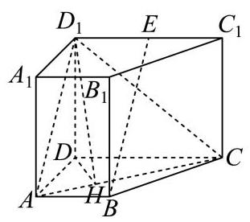
【小问 2 详解】
梯形 A B C D {ABCD} A BC D S = 1 2 × ( 2 + 4 ) × 3 = 9 S = \frac{1}{2} \times \left( {2 + 4}\right) \times 3 = 9 S = 2 1 × ( 2 + 4 ) × 3 = 9
V A B C D − A 1 B 1 C 1 D 1 = S ⋅ A A 1 = 36 {V}_{{ABCD} - {A}_{1}{B}_{1}{C}_{1}{D}_{1}} = S \cdot A{A}_{1} = {36} V A BC D − A 1 B 1 C 1 D 1 = S ⋅ A A 1 = 36 A A 1 = 4 A{A}_{1} = 4 A A 1 = 4
过 D D D D H ⊥ A C {DH} \bot {AC} DH ⊥ A C A C {AC} A C H H H D 1 H {D}_{1}H D 1 H
直四棱柱 A B C D − A 1 B 1 C 1 D 1 {ABCD} - {A}_{1}{B}_{1}{C}_{1}{D}_{1} A BC D − A 1 B 1 C 1 D 1 D D 1 ⊥ D{D}_{1} \bot D D 1 ⊥ A B C D {ABCD} A BC D D H {DH} DH D 1 H {D}_{1}H D 1 H A B C D {ABCD} A BC D
由 D H ⊥ A C {DH} \bot {AC} DH ⊥ A C D 1 H ⊥ A C {D}_{1}H \bot {AC} D 1 H ⊥ A C ∠ D 1 H D \angle {D}_{1}{HD} ∠ D 1 HD
Rt △ A C D \operatorname{Rt}\bigtriangleup {ACD} Rt △ A C D A D = 3 , C D = 4 {AD} = 3,{CD} = 4 A D = 3 , C D = 4 A C = 5 {AC} = 5 A C = 5 A C ⋅ D H = A D ⋅ C D {AC} \cdot {DH} = {AD} \cdot {CD} A C ⋅ DH = A D ⋅ C D D H = 12 5 {DH} = \frac{12}{5} DH = 5 12 tan ∠ D 1 H D = 1 D H = A 1 D H = 4 12 5 = 5 3 \tan \angle {D}_{1}{HD} = \frac{1}{DH} = \frac{{A}_{1}}{DH} = \frac{4}{\frac{12}{5}} = \frac{5}{3} tan ∠ D 1 HD = DH 1 = DH A 1 = 5 12 4 = 3 5 ∠ D 1 H D = arctan 5 3 \angle {D}_{1}{HD} = \arctan \frac{5}{3} ∠ D 1 HD = arctan 3 5
松江 · 第10题 ★★★☆☆ · 教师预估 在四棱柱 A B C D − A 1 B 1 C 1 D 1 {ABCD} - {A}_{1}{B}_{1}{C}_{1}{D}_{1} A BC D − A 1 B 1 C 1 D 1 A B C D {ABCD} A BC D ∣ A A 1 → ∣ = 2 \left| \overrightarrow{A{A}_{1}}\right| = 2 A A 1 = 2 A A 1 A{A}_{1} A A 1 B D {BD} B D arccos 2 5 , A D → ⋅ D C 1 → − A B → ⋅ B C 1 → = 4 \arccos \frac{2}{5},\overrightarrow{AD} \cdot \overrightarrow{D{C}_{1}} - \overrightarrow{AB} \cdot \overrightarrow{B{C}_{1}} = 4 arccos 5 2 , A D ⋅ D C 1 − A B ⋅ B C 1 = 4 ∣ B D 1 → ∣ = \left| \overrightarrow{B{D}_{1}}\right| = B D 1 =
考点： 向量分解得到数量积，再求对角线长度。难度依据： 通过数量积消元并处理空间夹角
展开答案与解析 【答案】 37 \sqrt{37} 37
【解析】
【分析】 利用向量的运算法则将已知条件进行转化,进而求出 ∣ B D 1 → ∣ \left| \overrightarrow{B{D}_{1}}\right| B D 1
【详解】 在四棱柱 A B C D − A 1 B 1 C 1 D 1 {ABCD} - {A}_{1}{B}_{1}{C}_{1}{D}_{1} A BC D − A 1 B 1 C 1 D 1
D C 1 → = D C → + C C 1 → = A B → + A A 1 → , B C 1 → = B C → + C C 1 → = A D → + A A 1 → \overrightarrow{D{C}_{1}} = \overrightarrow{DC} + \overrightarrow{C{C}_{1}} = \overrightarrow{AB} + \overrightarrow{A{A}_{1}},\overrightarrow{B{C}_{1}} = \overrightarrow{BC} + \overrightarrow{C{C}_{1}} = \overrightarrow{AD} + \overrightarrow{A{A}_{1}} D C 1 = D C + C C 1 = A B + A A 1 , B C 1 = BC + C C 1 = A D + A A 1
则 A D → ⋅ D C 1 → − A B → ⋅ B C 1 → = A D → ⋅ ( A B → + A A 1 → ) − A B → ⋅ ( A D → + A A 1 → ) \overrightarrow{AD} \cdot \overrightarrow{D{C}_{1}} - \overrightarrow{AB} \cdot \overrightarrow{B{C}_{1}} = \overrightarrow{AD} \cdot \left( {\overrightarrow{AB} + \overrightarrow{A{A}_{1}}}\right) - \overrightarrow{AB} \cdot \left( {\overrightarrow{AD} + \overrightarrow{A{A}_{1}}}\right) A D ⋅ D C 1 − A B ⋅ B C 1 = A D ⋅ ( A B + A A 1 ) − A B ⋅ ( A D + A A 1 )
根据向量乘法分配律展开可得:
A D → ⋅ A B → + A D → ⋅ A A 1 → − A B → ⋅ A D → − A B → ⋅ A A 1 → = A D → ⋅ A A 1 → − A B → ⋅ A A 1 → = ( A D → − A B → ) ⋅ A A 1 → \overrightarrow{AD} \cdot \overrightarrow{AB} + \overrightarrow{AD} \cdot \overrightarrow{A{A}_{1}} - \overrightarrow{AB} \cdot \overrightarrow{AD} - \overrightarrow{AB} \cdot \overrightarrow{A{A}_{1}} = \overrightarrow{AD} \cdot \overrightarrow{A{A}_{1}} - \overrightarrow{AB} \cdot \overrightarrow{A{A}_{1}} = \left( {\overrightarrow{AD} - \overrightarrow{AB}}\right) \cdot \overrightarrow{A{A}_{1}} A D ⋅ A B + A D ⋅ A A 1 − A B ⋅ A D − A B ⋅ A A 1 = A D ⋅ A A 1 − A B ⋅ A A 1 = ( A D − A B ) ⋅ A A 1
因为 A D → − A B → = B D → \overrightarrow{AD} - \overrightarrow{AB} = \overrightarrow{BD} A D − A B = B D ( A D → − A B → ) ⋅ A A 1 → = B D → ⋅ A A 1 → \left( {\overrightarrow{AD} - \overrightarrow{AB}}\right) \cdot \overrightarrow{A{A}_{1}} = \overrightarrow{BD} \cdot \overrightarrow{A{A}_{1}} ( A D − A B ) ⋅ A A 1 = B D ⋅ A A 1
已知 A D → ⋅ D C 1 → − A B → ⋅ B C 1 → = 4 \overrightarrow{AD} \cdot \overrightarrow{D{C}_{1}} - \overrightarrow{AB} \cdot \overrightarrow{B{C}_{1}} = 4 A D ⋅ D C 1 − A B ⋅ B C 1 = 4 B D → ⋅ A A 1 → = 4 \overrightarrow{BD} \cdot \overrightarrow{A{A}_{1}} = 4 B D ⋅ A A 1 = 4
又已知异面直线 A A 1 A{A}_{1} A A 1 B D {BD} B D arccos 2 5 \arccos \frac{2}{5} arccos 5 2 ∣ A A 1 → ∣ = 2 \left| \overrightarrow{A{A}_{1}}\right| = 2 A A 1 = 2
设 B D → \overrightarrow{BD} B D A A 1 → \overrightarrow{A{A}_{1}} A A 1 θ \theta θ cos θ = 2 5 \cos \theta = \frac{2}{5} cos θ = 5 2
根据向量点积公式 a → ⋅ b → = ∣ a → ∣ ∣ b → ∣ cos θ \overrightarrow{a} \cdot \overrightarrow{b} = \left| \overrightarrow{a}\right| \left| \overrightarrow{b}\right| \cos \theta a ⋅ b = a b cos θ B D → ⋅ A A 1 → = ∣ B D → ∣ ∣ A A 1 → ∣ cos θ \overrightarrow{BD} \cdot \overrightarrow{A{A}_{1}} = \left| \overrightarrow{BD}\right| \left| \overrightarrow{A{A}_{1}}\right| \cos \theta B D ⋅ A A 1 = B D A A 1 cos θ
即 4 = ∣ B D → ∣ × 2 × 2 5 4 = \left| \overrightarrow{BD}\right| \times 2 \times \frac{2}{5} 4 = B D × 2 × 5 2 ∣ B D → ∣ = 5 \left| \overrightarrow{BD}\right| = 5 B D = 5
因为 B D 1 → = B D → + D D 1 → = B D → + A A 1 → \overrightarrow{B{D}_{1}} = \overrightarrow{BD} + \overrightarrow{D{D}_{1}} = \overrightarrow{BD} + \overrightarrow{A{A}_{1}} B D 1 = B D + D D 1 = B D + A A 1
∣ B D 1 → ∣ 2 = ( B D → + A A 1 → ) 2 = B D → 2 + 2 B D → ⋅ A A 1 → + A A 1 → 2 . {\left| \overrightarrow{B{D}_{1}}\right| }^{2} = {\left( \overrightarrow{BD} + \overrightarrow{A{A}_{1}}\right) }^{2} = {\overrightarrow{BD}}^{2} + 2\overrightarrow{BD} \cdot \overrightarrow{A{A}_{1}} + {\overrightarrow{A{A}_{1}}}^{2}. B D 1 2 = ( B D + A A 1 ) 2 = B D 2 + 2 B D ⋅ A A 1 + A A 1 2 .
将 ∣ B D → ∣ = 5 , B D → ⋅ A A 1 → = 4 , ∣ A A 1 → ∣ = 2 \left| \overrightarrow{BD}\right| = 5,\overrightarrow{BD} \cdot \overrightarrow{A{A}_{1}} = 4,\left| \overrightarrow{A{A}_{1}}\right| = 2 B D = 5 , B D ⋅ A A 1 = 4 , A A 1 = 2 ∣ B D 1 → ∣ 2 = 5 2 + 2 × 4 + 2 2 = 25 + 8 + 4 = 37 {\left| \overrightarrow{B{D}_{1}}\right| }^{2} = {5}^{2} + 2 \times 4 + {2}^{2} = {25} + 8 + 4 = {37} B D 1 2 = 5 2 + 2 × 4 + 2 2 = 25 + 8 + 4 = 37 ∣ B D 1 → ∣ = 37 \left| \overrightarrow{B{D}_{1}}\right| = \sqrt{37} B D 1 = 37
松江 · 第17题 ★★★☆☆ · 教师预估 本题资料或解析有待核事项，预览不可作为已审定成品。
在如图所示的多面体中,已知四边形 A B C D {ABCD} A BC D ∠ A B C = 60 ∘ , F A ⊥ \angle {ABC} = {60}^{ \circ },{FA} \bot ∠ A BC = 60 ∘ , F A ⊥ A B C D , E D ⊥ {ABCD},{ED} \bot A BC D , E D ⊥ A B C D , A B = F A = 2 E D = 2 {ABCD},{AB} = {FA} = {2ED} = 2 A BC D , A B = F A = 2 E D = 2 G G G A F {AF} A F
(1)求证:平面 B D G / / {BDG}// B D G // C E F {CEF} CEF
(2)求直线 B C {BC} BC B D G {BDG} B D G
考点： (1)借助中点和两组平行线证明面面平行；(2)建空间坐标求平面法向量与线面角。难度依据： 几何证明与向量计算结合
核查说明： 答案解析第477字符附近：损坏字符或字体覆盖风险，需回源并视觉检查（底稿扫描记录）；答案解析第710字符附近：损坏字符或字体覆盖风险，需回源并视觉检查（底稿扫描记录）
展开答案与解析 【答案】 (1)证明见解析
(2) 2 4 \frac{\sqrt{2}}{4} 4 2
【解析】
【分析】 (1)连接 A C {AC} A C B D {BD} B D O O O O G , D G {OG},{DG} OG , D G O G / / C F , D G / / E F {OG}//{CF},{DG}//{EF} OG // CF , D G // EF
(2)以 A A A B C {BC} BC B D G {BDG} B D G
【小问 1 详解】
连接 A C {AC} A C B D {BD} B D O O O O G , D G {OG},{DG} OG , D G
因为菱形 A B C D {ABCD} A BC D O O O A C {AC} A C
所以 O G / / C F {OG}//{CF} OG // CF
又 O G ⊄ {OG} \not\subset OG ⊂ C E F , F C ⊂ {CEF},{FC} \subset CEF , FC ⊂ C E F {CEF} CEF
所以 O G / / {OG}// OG // C E F {CEF} CEF
因为 F A ⊥ {FA} \bot F A ⊥ A B C D , E D ⊥ {ABCD},{ED} \bot A BC D , E D ⊥ A B C D {ABCD} A BC D
所以 F A / / D E {FA}//{DE} F A // D E
又 F A = 2 E D = 2 , F A = 2 F G {FA} = {2ED} = 2,{FA} = {2FG} F A = 2 E D = 2 , F A = 2 FG D E F G {DEFG} D EFG
所以 D G / / E F {DG}//{EF} D G // EF
又 D G ⊄ {DG} \not\subset D G ⊂ C E F , E F ⊂ {CEF},{EF} \subset CEF , EF ⊂ C E F {CEF} CEF
所以 D G / / {DG}// D G // C E F {CEF} CEF
因为 O G ∩ D G = G , O G 、 D G ⊂ {OG} \cap {DG} = G,{OG}\text{ 、 }{DG} \subset OG ∩ D G = G , OG 、 D G ⊂ B D G {BDG} B D G
所以平面 B D G / / {BDG}// B D G // C E F {CEF} CEF
【小问 2 详解】
取 B C {BC} BC M M M A M {AM} A M
因为 ∠ A B C = 60 ∘ \angle {ABC} = {60}^{ \circ } ∠ A BC = 60 ∘ A B C D {ABCD} A BC D
所以 A B C {ABC} A BC A M ⊥ B C {AM} \bot {BC} A M ⊥ BC
则建立以 A A A A M 、 A D 、 A F {AM}\text{ 、 }{AD}\text{ 、 }{AF} A M 、 A D 、 A F x x x y y y z z z A − x y z A - {xyz} A − x yz
则 B ( 3 , − 1 , 0 ) , C ( 3 , 1 , 0 ) , D ( 0 , 2 , 0 ) , G ( 0 , 0 , 1 ) B\left( {\sqrt{3}, - 1,0}\right) , C\left( {\sqrt{3},1,0}\right) , D\left( {0,2,0}\right) , G\left( {0,0,1}\right) B ( 3 , − 1 , 0 ) , C ( 3 , 1 , 0 ) , D ( 0 , 2 , 0 ) , G ( 0 , 0 , 1 )
所以 B C → = ( 0 , 2 , 0 ) , B D → = ( − 3 , 3 , 0 ) , D G → = ( 0 , − 2 , 1 ) \overrightarrow{BC} = \left( {0,2,0}\right) ,\overrightarrow{BD} = \left( {-\sqrt{3},3,0}\right) ,\overrightarrow{DG} = \left( {0, - 2,1}\right) BC = ( 0 , 2 , 0 ) , B D = ( − 3 , 3 , 0 ) , D G = ( 0 , − 2 , 1 )
设平面 B D G {BDG} B D G n → = ( x , y , z ) \overrightarrow{n} = \left( {x, y, z}\right) n = ( x , y , z )
则 { n → ⋅ B D → = − 3 x + 3 y = 0 n → ⋅ D G → = − 2 y + z = 0 ⇒ { x = 3 y z = 2 y \left\{ {\begin{array}{l} \overrightarrow{n} \cdot \overrightarrow{BD} = - \sqrt{3}x + {3y} = 0 \\ \overrightarrow{n} \cdot \overrightarrow{DG} = - {2y} + z = 0 \end{array} \Rightarrow \left\{ \begin{array}{l} x = \sqrt{3}y \\ z = {2y} \end{array}\right. }\right. { n ⋅ B D = − 3 x + 3 y = 0 n ⋅ D G = − 2 y + z = 0 ⇒ { x = 3 y z = 2 y y = 1 y = 1 y = 1 x = 3 , z = 2 x = \sqrt{3}, z = 2 x = 3 , z = 2 n → = ( 3 , 1 , 2 ) \overrightarrow{n} = \left( {\sqrt{3},1,2}\right) n = ( 3 , 1 , 2 )
所以 cos ⟨ B C → , n → ⟩ = B C → ⋅ n → ∣ B C → ∣ ⋅ ∣ n → ∣ = 2 2 × 2 2 = 2 4 \cos \langle \overrightarrow{BC},\overrightarrow{n}\rangle = \frac{\overrightarrow{BC} \cdot \overrightarrow{n}}{\left| \overrightarrow{BC}\right| \cdot \left| \overrightarrow{n}\right| } = \frac{2}{2 \times 2\sqrt{2}} = \frac{\sqrt{2}}{4} cos ⟨ BC , n ⟩ = BC ⋅ ∣ n ∣ BC ⋅ n = 2 × 2 2 2 = 4 2
直线 B C {BC} BC B D G {BDG} B D G 2 4 \frac{\sqrt{2}}{4} 4 2
浦东 · 第17题 ★★★★☆ · 教师预估 如图，在多面体 P Q A B C D {PQABCD} PQ A BC D P A D ⊥ {PAD} \bot P A D ⊥ A B C D {ABCD} A BC D A B / / C D / / P Q {AB}//{CD}//{PQ} A B // C D // PQ P D ⊥ C D {PD} \bot {CD} P D ⊥ C D △ P A D \bigtriangleup {PAD} △ P A D 2 \sqrt{2} 2 A B = P Q = 1 2 C D {AB} = {PQ} = \frac{1}{2}{CD} A B = PQ = 2 1 C D
(1)求证: A B ⊥ {AB}\bot A B ⊥ P A D {PAD} P A D
(2)若 P C {PC} PC A B C D {ABCD} A BC D π 6 \frac{\pi }{6} 6 π P Q A B C D {PQABCD} PQ A BC D
考点： (1)面面垂直性质结合线面垂直判定；(2)利用投影角求长度并分割多面体体积。难度依据： 借垂直关系建模并合理分割
展开答案与解析 【答案】 (1)证明见解析
(2) 2 3 3 \frac{2\sqrt{3}}{3} 3 2 3
【解析】
【分析】 (1) 利用面面垂直的性质和线面垂直的判定定理进行证明;
(2)将多面体拆分成直棱柱和三棱锥两部分，分别计算体积再求和.
【小问 1 详解】
证明: 取 A D {AD} A D O O O P O {PO} PO
因为 △ P A D \bigtriangleup {PAD} △ P A D O O O A D {AD} A D
所以 P O ⊥ A D {PO} \bot {AD} PO ⊥ A D
又平面 P A D ⊥ {PAD} \bot P A D ⊥ A B C D {ABCD} A BC D
平面 P A D ∩ {PAD} \cap P A D ∩ A B C D = A D , P O ⊂ {ABCD} = {AD},{PO} \subset A BC D = A D , PO ⊂ P A D {PAD} P A D
所以 P O ⊥ {PO} \bot PO ⊥ A B C D {ABCD} A BC D
又 A B ⊂ {AB} \subset A B ⊂ A B C D {ABCD} A BC D P O ⊥ A B {PO} \bot {AB} PO ⊥ A B
因为 A B / / C D , P D ⊥ C D {AB}//{CD},{PD} \bot {CD} A B // C D , P D ⊥ C D P D ⊥ A B {PD} \bot {AB} P D ⊥ A B
由 P O ⊂ {PO} \subset PO ⊂ P A D , P D ⊂ {PAD},{PD} \subset P A D , P D ⊂ P A D , P O ∩ P D = P {PAD},{PO} \cap {PD} = P P A D , PO ∩ P D = P
所以 A B ⊥ {AB} \bot A B ⊥ P A D {PAD} P A D
【小问 2 详解】
连接 P C 、 O C {PC}\text{ 、 }{OC} PC 、 OC P O ⊥ {PO} \bot PO ⊥ A B C D {ABCD} A BC D
所以 P C {PC} PC A B C D {ABCD} A BC D O C {OC} OC
故 ∠ P C O \angle {PCO} ∠ PCO P C {PC} PC A B C D {ABCD} A BC D ∠ P C O = π 6 \angle {PCO} = \frac{\pi }{6} ∠ PCO = 6 π
tan ∠ P C O = P O C O = 3 3 \tan \angle {PCO} = \frac{PO}{CO} = \frac{\sqrt{3}}{3} tan ∠ PCO = CO PO = 3 3 P O = 6 2 {PO} = \frac{\sqrt{6}}{2} PO = 2 6 C O = 3 2 2 {CO} = \frac{3\sqrt{2}}{2} CO = 2 3 2
因为 A B ⊥ {AB} \bot A B ⊥ P A D , A B / / C D {PAD},{AB}//{CD} P A D , A B // C D C D ⊥ {CD} \bot C D ⊥ P A D {PAD} P A D C D ⊥ A D {CD} \bot {AD} C D ⊥ A D
因此, C D = C O 2 − O D 2 = 2 , P Q = 1 2 C D = 1 {CD} = \sqrt{C{O}^{2} - O{D}^{2}} = 2,{PQ} = \frac{1}{2}{CD} = 1 C D = C O 2 − O D 2 = 2 , PQ = 2 1 C D = 1
取 C D {CD} C D M M M B M 、 Q M {BM}\text{ 、 }{QM} BM 、 QM
则 V P Q A B C D = V P A D − Q B M + V Q − M B C {V}_{PQABCD} = {V}_{{PAD} - {QBM}} + {V}_{Q - {MBC}} V PQ A BC D = V P A D − QBM + V Q − MBC
= A B ⋅ S △ P A D + 1 3 C M ⋅ S △ Q M B = 3 2 + 3 6 = 2 3 3 = {AB} \cdot {S}_{\bigtriangleup {PAD}} + \frac{1}{3}{CM} \cdot {S}_{\bigtriangleup {QMB}} = \frac{\sqrt{3}}{2} + \frac{\sqrt{3}}{6} = \frac{2\sqrt{3}}{3} = A B ⋅ S △ P A D + 3 1 CM ⋅ S △ QMB = 2 3 + 6 3 = 3 2 3
所以多面体 P Q A B C D {PQABCD} PQ A BC D 2 3 3 \frac{2\sqrt{3}}{3} 3 2 3
虹口 · 第8题 ★★★★☆ · 教师预估 在正四棱台 A B C D − A 1 B 1 C 1 D 1 {ABCD} - {A}_{1}{B}_{1}{C}_{1}{D}_{1} A BC D − A 1 B 1 C 1 D 1 A B = 2 , A 1 B 1 = 4 {AB} = 2,{A}_{1}{B}_{1} = 4 A B = 2 , A 1 B 1 = 4 C 1 D 1 {C}_{1}{D}_{1} C 1 D 1 A A 1 A{A}_{1} A A 1 π 3 \frac{\pi }{3} 3 π A − A 1 B 1 − D 1 A - {A}_{1}{B}_{1} - {D}_{1} A − A 1 B 1 − D 1 θ \theta θ tan θ = \tan \theta = tan θ =
考点： 棱台异面角与二面角。难度依据： 棱台异面角与二面角
展开答案与解析 【答案】 2 \sqrt{2} 2
【解析】
【分析】 法一在正四棱台中,由异面直线所成角可得 ∠ A A 1 B 1 = 60 \angle A{A}_{1}{B}_{1} = {60} ∠ A A 1 B 1 = 60
【详解】 法一: 在正四棱台 A B C D − A 1 B 1 C 1 D 1 {ABCD} - {A}_{1}{B}_{1}{C}_{1}{D}_{1} A BC D − A 1 B 1 C 1 D 1 C 1 D 1 / / A 1 B 1 {C}_{1}{D}_{1}//{A}_{1}{B}_{1} C 1 D 1 // A 1 B 1
因为 A B = 2 {AB} = 2 A B = 2 A 1 B 1 = 4 {A}_{1}{B}_{1} = 4 A 1 B 1 = 4 ∠ A A 1 B 1 \angle {A{A}_{1}{B}_{1}} ∠ A A 1 B 1 C 1 D 1 {C}_{1}{D}_{1} C 1 D 1 A A 1 A{A}_{1} A A 1
即 ∠ A A 1 B 1 = 60 \angle A{A}_{1}{B}_{1} = {60} ∠ A A 1 B 1 = 60 A A A A 1 B 1 C 1 D 1 {A}_{1}{B}_{1}{C}_{1}{D}_{1} A 1 B 1 C 1 D 1 G G G
作直线 A 1 B 1 {A}_{1}{B}_{1} A 1 B 1 H H H G H {GH} G H
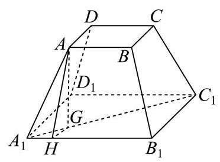
由正四棱台性质可知,点 G G G A 1 C 1 {A}_{1}{C}_{1} A 1 C 1 A 1 H = 1 {A}_{1}H = 1 A 1 H = 1
所以 A H = 3 , A 1 G = 1 2 ( A 1 C 1 − A C ) = 2 , G H = A 1 G 2 − A 1 H 2 = 1 {AH} = \sqrt{3},{A}_{1}G = \frac{1}{2}\left( {{A}_{1}{C}_{1} - {AC}}\right) = \sqrt{2},{GH} = \sqrt{{A}_{1}{G}^{2} - {A}_{1}{H}^{2}} = 1 A H = 3 , A 1 G = 2 1 ( A 1 C 1 − A C ) = 2 , G H = A 1 G 2 − A 1 H 2 = 1
由二面角定义可知 ∠ A H G \angle {AHG} ∠ A H G A − A 1 B 1 − D 1 A - {A}_{1}{B}_{1} - {D}_{1} A − A 1 B 1 − D 1
而 tan ∠ A H G = A G G H = 2 \tan \angle {AHG} = \frac{AG}{GH} = \sqrt{2} tan ∠ A H G = G H A G = 2 tan θ = 2 \tan \theta = \sqrt{2} tan θ = 2
法二: 如图,作出符合题意的图形,作下底面中心 O 1 {O}_{1} O 1 O O O O 1 {O}_{1} O 1 h h h
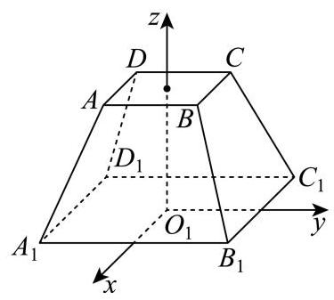
由题意得 A B = 2 , A 1 B 1 = 4 {AB} = 2,{A}_{1}{B}_{1} = 4 A B = 2 , A 1 B 1 = 4 C 1 ( − 2 , 2 , 0 ) , D 1 ( − 2 , − 2 , 0 ) , B 1 ( 2 , 2 , 0 ) A 1 ( 2 , − 2 , 0 ) , A ( 1 , − 1 , h ) {C}_{1}\left( {-2,2,0}\right) ,{D}_{1}\left( {-2, - 2,0}\right) ,{B}_{1}\left( {2,2,0}\right) \; {A}_{1}\left( {2, - 2,0}\right) ,\;A\left( {1, - 1, h}\right) C 1 ( − 2 , 2 , 0 ) , D 1 ( − 2 , − 2 , 0 ) , B 1 ( 2 , 2 , 0 ) A 1 ( 2 , − 2 , 0 ) , A ( 1 , − 1 , h ) C 1 D 1 → = ( 0 , − 4 , 0 ) , A A 1 → = ( 1 , − 1 , − h ) \overrightarrow{{C}_{1}{D}_{1}} = \left( {0, - 4,0}\right) ,\;\overrightarrow{A{A}_{1}} = \left( {1, - 1, - h}\right) C 1 D 1 = ( 0 , − 4 , 0 ) , A A 1 = ( 1 , − 1 , − h )
因为异面直线 C 1 D 1 {C}_{1}{D}_{1} C 1 D 1 A A 1 A{A}_{1} A A 1 π 3 \frac{\pi }{3} 3 π
所以 4 4 × 1 2 + ( − 1 ) 2 + ( − h ) 2 = 1 2 \frac{4}{4 \times \sqrt{{1}^{2} + {\left( -1\right) }^{2} + {\left( -h\right) }^{2}}} = \frac{1}{2} 4 × 1 2 + ( − 1 ) 2 + ( − h ) 2 4 = 2 1 h = 2 h = \sqrt{2} h = 2
由题意得面 A 1 B 1 D 1 {A}_{1}{B}_{1}{D}_{1} A 1 B 1 D 1 n → = ( 0 , 0 , 1 ) \overrightarrow{n} = \left( {0,0,1}\right) n = ( 0 , 0 , 1 )
则 A ( 1 , − 1 , 2 ) , A A 1 → = ( 1 , − 1 , − 2 ) , A 1 B 1 → = ( 0 , 4 , 0 ) A\left( {1, - 1,\sqrt{2}}\right) ,\overrightarrow{A{A}_{1}} = \left( {1, - 1, - \sqrt{2}}\right) ,\overrightarrow{{A}_{1}{B}_{1}} = \left( {0,4,0}\right) A ( 1 , − 1 , 2 ) , A A 1 = ( 1 , − 1 , − 2 ) , A 1 B 1 = ( 0 , 4 , 0 )
设面 A A 1 B 1 A{A}_{1}{B}_{1} A A 1 B 1 m → = ( x , y , z ) \overrightarrow{m} = \left( {x, y, z}\right) m = ( x , y , z )
则 { A A 1 → ⋅ m → = x − y − 2 z = 0 A 1 B 1 → ⋅ m → = 4 y = 0 \left\{ \begin{array}{l} \overrightarrow{A{A}_{1}} \cdot \overrightarrow{m} = x - y - \sqrt{2}z = 0 \\ \overrightarrow{{A}_{1}{B}_{1}} \cdot \overrightarrow{m} = {4y} = 0 \end{array}\right. { A A 1 ⋅ m = x − y − 2 z = 0 A 1 B 1 ⋅ m = 4 y = 0 x = 2 x = \sqrt{2} x = 2 y = 0 , z = 1 y = 0, z = 1 y = 0 , z = 1
得到 m → = ( 2 , 0 , 1 ) \overrightarrow{m} = \left( {\sqrt{2},0,1}\right) m = ( 2 , 0 , 1 ) θ \theta θ cos θ = ∣ m → ⋅ n → ∣ ∣ m → ∣ ⋅ ∣ n → ∣ = 1 1 × 3 = 3 3 \cos \theta = \frac{\left| \overrightarrow{m} \cdot \overrightarrow{n}\right| }{\left| \overrightarrow{m}\right| \cdot \left| \overrightarrow{n}\right| } = \frac{1}{1 \times \sqrt{3}} = \frac{\sqrt{3}}{3} cos θ = ∣ m ∣ ⋅ ∣ n ∣ ∣ m ⋅ n ∣ = 1 × 3 1 = 3 3
由已知得 sin θ > 0 \sin \theta > 0 sin θ > 0 sin θ = 6 3 \sin \theta = \frac{\sqrt{6}}{3} sin θ = 3 6
故 tan θ = sin θ cos θ = 6 3 3 3 = 2 \tan \theta = \frac{\sin \theta }{\cos \theta } = \frac{\frac{\sqrt{6}}{3}}{\frac{\sqrt{3}}{3}} = \sqrt{2} tan θ = c o s θ s i n θ = 3 3 3 6 = 2
虹口 · 第17题 ★★★★☆ · 教师预估 本题资料或解析有待核事项，预览不可作为已审定成品。
如图,在底面半径为 2,侧面积为 4 5 π 4\sqrt{5}\pi 4 5 π
P − O \mathrm{P} - \mathrm{O} P − O A 、 B 、 C A\text{ 、 }B\text{ 、 }C A 、 B 、 C ∠ A O B = ∠ B O C = 45 ∘ \angle {AOB} = \angle {BOC} = {45}^{ \circ } ∠ A OB = ∠ BOC = 45 ∘
(1)求直线 O B {OB} OB P A C {PAC} P A C
(2)设点 D D D P B {PB} PB P P P B B B O A {OA} O A C D {CD} C D
考点： (1) 圆锥高度与空间法向量求线面角；(2) 动点参数化、数量积证明不垂直。难度依据： 圆锥线面角和动线不垂直；空间坐标与数量积
核查说明： 题面∠AOB=∠BOC=45°，原解据图取AOC=90°；依赖A、C异侧位置，需核图以确认。
展开答案与解析 【答案】 (1) 2 2 3 \frac{2\sqrt{2}}{3} 3 2 2
(2)证明见解析
【解析】
【分析】 (1) 利用侧面积求解出圆锥的高,再利用建系的方法,求出直线 O B {OB} OB P A C {PAC} P A C
(2)利用向量的方法，将点 D D D P B {PB} PB P D → = λ P B → \overrightarrow{PD} = \lambda \overrightarrow{PB} P D = λ PB O A → \overrightarrow{OA} O A C D → \overrightarrow{CD} C D
【小问 1 详解】
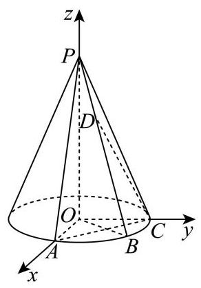
∵ ∠ A O B = ∠ B O C = 45 ∘ \because \angle {AOB} = \angle {BOC} = {45}^{ \circ } ∵ ∠ A OB = ∠ BOC = 45 ∘
∴ ∠ A O C = 90 ∘ \therefore \angle {AOC} = {90}^{ \circ } ∴ ∠ A OC = 90 ∘
所以可以建立如右图所示的空间直角坐标系,
所以 B ( 2 , 2 , 0 ) , O B → = ( 2 , 2 , 0 ) B\left( {\sqrt{2},\sqrt{2},0}\right) ,\overrightarrow{OB} = \left( {\sqrt{2},\sqrt{2},0}\right) B ( 2 , 2 , 0 ) , OB = ( 2 , 2 , 0 ) O P = a {OP} = a OP = a
则母线长为 4 + a 2 \sqrt{4 + {a}^{2}} 4 + a 2
则侧面积为 1 2 4 + a 2 × 2 π × 2 = 2 4 + a 2 π = 4 5 π \frac{1}{2}\sqrt{4 + {a}^{2}} \times {2\pi } \times 2 = 2\sqrt{4 + {a}^{2}}\pi = 4\sqrt{5}\pi 2 1 4 + a 2 × 2 π × 2 = 2 4 + a 2 π = 4 5 π
解得: a = 4 a = 4 a = 4
所以 P ( 0 , 0 , 4 ) P\left( {0,0,4}\right) P ( 0 , 0 , 4 )
A ( 2 , 0 , 0 ) , C ( 0 , 2 , 0 ) , A C → = ( − 2 , 2 , 0 ) , P A → = ( 2 , 0 , − 4 ) A\left( {2,0,0}\right) , C\left( {0,2,0}\right) ,\overrightarrow{AC} = \left( {-2,2,0}\right) ,\overrightarrow{PA} = \left( {2,0, - 4}\right) A ( 2 , 0 , 0 ) , C ( 0 , 2 , 0 ) , A C = ( − 2 , 2 , 0 ) , P A = ( 2 , 0 , − 4 )
设面 P A C {PAC} P A C m → = ( x 1 , y 1 , z 1 ) \overrightarrow{m} = \left( {{x}_{1},{y}_{1},{z}_{1}}\right) m = ( x 1 , y 1 , z 1 )
所以 m → ⋅ A C → = − 2 x 1 + 2 y 1 = 0 , m → ⋅ P A → = 2 x 1 − 4 z 1 = 0 \overrightarrow{m} \cdot \overrightarrow{AC} = - 2{x}_{1} + 2{y}_{1} = 0,\overrightarrow{m} \cdot \overrightarrow{PA} = 2{x}_{1} - 4{z}_{1} = 0 m ⋅ A C = − 2 x 1 + 2 y 1 = 0 , m ⋅ P A = 2 x 1 − 4 z 1 = 0
不妨令 x 1 = y 1 = 1 {x}_{1} = {y}_{1} = 1 x 1 = y 1 = 1 z 1 = 1 2 {z}_{1} = \frac{1}{2} z 1 = 2 1
所以 m → = ( 1 , 1 , 1 2 ) \overrightarrow{m} = \left( {1,1,\frac{1}{2}}\right) m = ( 1 , 1 , 2 1 ) O B {OB} OB P A C {PAC} P A C θ \theta θ
所以 sin θ = ∣ cos ⟨ O B → , m → ⟩ ∣ = ∣ O B → ⋅ m → ∣ ∣ O B → ∣ ⋅ ∣ m → ∣ = 2 2 2 × 1 2 + 1 2 + ( 1 2 ) 2 = 2 2 3 \sin \theta = \left| {\cos \langle \overrightarrow{OB},\overrightarrow{m}\rangle }\right| = \frac{\left| \overrightarrow{OB} \cdot \overrightarrow{m}\right| }{\left| \overrightarrow{OB}\right| \cdot \left| \overrightarrow{m}\right| } = \frac{2\sqrt{2}}{2 \times \sqrt{{1}^{2} + {1}^{2} + {\left( \frac{1}{2}\right) }^{2}}} = \frac{2\sqrt{2}}{3} sin θ = cos ⟨ OB , m ⟩ = OB ⋅ ∣ m ∣ OB ⋅ m = 2 × 1 2 + 1 2 + ( 2 1 ) 2 2 2 = 3 2 2
【小问 2 详解】
因为 D D D P B {PB} PB P D → = λ P B → , λ ∈ ( 0 , 1 ) \overrightarrow{PD} = \lambda \overrightarrow{PB},\lambda \in \left( {0,1}\right) P D = λ PB , λ ∈ ( 0 , 1 )
C D → = C P → + P D → \overrightarrow{CD} = \overrightarrow{CP} + \overrightarrow{PD} C D = CP + P D P D → = λ P B → = λ ( 2 , 2 , − 4 ) = ( 2 λ , 2 λ , − 4 λ ) \overrightarrow{PD} = \lambda \overrightarrow{PB} = \lambda \left( {\sqrt{2},\sqrt{2}, - 4}\right) = \left( {\sqrt{2}\lambda ,\sqrt{2}\lambda , - {4\lambda }}\right) P D = λ PB = λ ( 2 , 2 , − 4 ) = ( 2 λ , 2 λ , − 4 λ )
C P → = ( 0 , − 2 , 4 ) , C D → = C P → + P D → = ( 2 λ , 2 λ − 2 , 4 − 4 λ ) , \overrightarrow{CP} = \left( {0, - 2,4}\right) ,\overrightarrow{CD} = \overrightarrow{CP} + \overrightarrow{PD} = \left( {\sqrt{2}\lambda ,\sqrt{2}\lambda - 2,4 - {4\lambda }}\right) , CP = ( 0 , − 2 , 4 ) , C D = CP + P D = ( 2 λ , 2 λ − 2 , 4 − 4 λ ) ,
O A → = ( 2 , 0 , 0 ) , \overrightarrow{OA} = \left( {2,0,0}\right) , O A = ( 2 , 0 , 0 ) ,
O A → ⋅ C D → = 2 2 λ ≠ 0 , \overrightarrow{OA} \cdot \overrightarrow{CD} = 2\sqrt{2}\lambda \neq 0, O A ⋅ C D = 2 2 λ = 0 ,
所以直线 O A {OA} O A C D {CD} C D
金山 · 第18题 ★★★☆☆ · 教师预估 本题资料或解析有待核事项，预览不可作为已审定成品。
已知长方形 A B C D {ABCD} A BC D A B = 2 , B C = 4 {AB} = 2,{BC} = 4 A B = 2 , BC = 4 E E E F F F B C {BC} BC A D {AD} A D
1). 若将长方形 A B E F {ABEF} A BEF E F {EF} EF A 1 − E F − D {A}_{1} - {EF} - D A 1 − EF − D A 1 − E F − D {A}_{1} - {EF} - D A 1 − EF − D 60 ∘ {60}^{ \circ } 60 ∘
图1
图2
(1)求证:平面 A 1 F D / / {A}_{1}{FD}// A 1 F D // B E C {BEC} BEC
(2)求直线 C A 1 C{A}_{1} C A 1 A 1 B E F {A}_{1}{BEF} A 1 BEF
考点： (1) 线面平行进而证面面平行；(2) 构造二面角平面角与线面角。难度依据： 翻折中的面面平行和线面角
核查说明： 答案解析第250字符附近：损坏字符或字体覆盖风险，需回源并视觉检查（底稿扫描记录）
展开答案与解析 【答案】 (1) 证明过程见解析;
(2) arctan 15 5 \arctan \frac{\sqrt{15}}{5} arctan 5 15
【解析】
【分析】 (1) 由线线平行得到线面平行, 进而得到面面平行;
(2)先由二面角大小得到各边长，作出辅助线，得到线面垂直，进而求出线面角的大小 【小问 1 详解】
因为长方形 A B C D {ABCD} A BC D E C / / F D {EC}//{FD} EC // F D A 1 F / / B E {A}_{1}F//{BE} A 1 F // BE
又 E C ⊂ {EC} \subset EC ⊂ B E C {BEC} BEC F D ⊄ {FD} \not\subset F D ⊂ B E C {BEC} BEC F D / / {FD}// F D // B E C {BEC} BEC
同理可得 A 1 F / / {A}_{1}F// A 1 F // B E C {BEC} BEC
又 F D ∩ A 1 F = F , F D , A 1 F ⊂ {FD} \cap {A}_{1}F = F,{FD},{A}_{1}F \subset F D ∩ A 1 F = F , F D , A 1 F ⊂ A 1 F D {A}_{1}{FD} A 1 F D A 1 F D / / {A}_{1}{FD}// A 1 F D // B E C {BEC} BEC
【小问 2 详解】
因为长方形 A B C D {ABCD} A BC D E 、 F E\text{ 、 }F E 、 F B C 、 A D {BC}\text{ 、 }{AD} BC 、 A D
故 E F ⊥ A 1 F , E F ⊥ D F {EF} \bot {A}_{1}F,{EF} \bot {DF} EF ⊥ A 1 F , EF ⊥ D F A 1 − E F − D {A}_{1} - {EF} - D A 1 − EF − D ∠ A 1 F D \angle {A}_{1}{FD} ∠ A 1 F D ∠ A 1 F D = 60 ∘ \angle {A}_{1}{FD} = {60}^{ \circ } ∠ A 1 F D = 60 ∘
又 A B = 2 , B C = 4 {AB} = 2,{BC} = 4 A B = 2 , BC = 4 A 1 F = D F = 2 , ∴ A 1 F D {A}_{1}F = {DF} = 2,\therefore {A}_{1}{FD} A 1 F = D F = 2 , ∴ A 1 F D
同理可得 △ B C E \bigtriangleup {BCE} △ BCE
取 B E {BE} BE H H H C H , A 1 H {CH},{A}_{1}H C H , A 1 H C H ⊥ B E {CH} \bot {BE} C H ⊥ BE
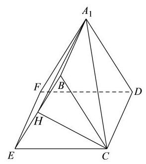
又 E F ⊥ {EF} \bot EF ⊥ B E C , C H ⊂ {BEC},{CH} \subset BEC , C H ⊂ B E C {BEC} BEC E F ⊥ C H {EF} \bot {CH} EF ⊥ C H
因为 B E ∩ E F = E , B E , E F ⊂ {BE} \cap {EF} = E,{BE},{EF} \subset BE ∩ EF = E , BE , EF ⊂ A 1 B E F {A}_{1}{BEF} A 1 BEF C H ⊥ {CH} \bot C H ⊥ A 1 B E F {A}_{1}{BEF} A 1 BEF
故直线 C A 1 C{A}_{1} C A 1 A 1 B E F {A}_{1}{BEF} A 1 BEF ∠ H A 1 C \angle H{A}_{1}C ∠ H A 1 C
E H = B H = 1 , ∠ B E C = 60 ∘ {EH} = {BH} = 1,\angle {BEC} = {60}^{ \circ } E H = B H = 1 , ∠ BEC = 60 ∘ C H = 3 {CH} = \sqrt{3} C H = 3 A 1 H = A 1 B 2 + B H 2 = 5 {A}_{1}H = \sqrt{{A}_{1}{B}^{2} + B{H}^{2}} = \sqrt{5} A 1 H = A 1 B 2 + B H 2 = 5 tan ∠ H A 1 C = H C A 1 H = 3 5 = 15 5 \tan \angle H{A}_{1}C = \frac{HC}{{A}_{1}H} = \frac{\sqrt{3}}{\sqrt{5}} = \frac{\sqrt{15}}{5} tan ∠ H A 1 C = A 1 H H C = 5 3 = 5 15
直线 C A 1 C{A}_{1} C A 1 A 1 B E F {A}_{1}{BEF} A 1 BEF arctan 15 5 \arctan \frac{\sqrt{15}}{5} arctan 5 15
长宁 · 第18题 ★★★☆☆ · 教师预估 如图， P P P O O O A A A B B B O A ⊥ O B {OA}\bot {OB} O A ⊥ OB O A = O B = 1 {OA} = {OB} = 1 O A = OB = 1
(1)若圆锥的侧面积为 2 π {2\pi } 2 π
(2)若直线 P A {PA} P A P O B {POB} POB P − A B − O P - {AB} - O P − A B − O
考点： （1）侧面积求母线及圆锥体积；（2）线面角与二面角。难度依据： 圆锥体积线面角与二面角
展开答案与解析 【答案】 (1) 3 3 π \frac{\sqrt{3}}{3}\pi 3 3 π
(2) 6 \sqrt{6} 6
【解析】
【分析】 (1) 根据条件求圆锥的高, 再求体积;
(2)首先根据线面角求 P O {PO} PO
【小问 1 详解】
设圆锥的底面半径为 r r r l , r = 1 l, r = 1 l , r = 1
圆锥的侧面积 s = π r l = π l = 2 π s = {\pi rl} = {\pi l} = {2\pi } s = π r l = π l = 2 π l = 2 l = 2 l = 2
则圆锥的高 h = l 2 − r 2 = 3 h = \sqrt{{l}^{2} - {r}^{2}} = \sqrt{3} h = l 2 − r 2 = 3
则圆锥的体积 V = 1 3 π r 2 h = 1 3 π ⋅ 3 = 3 3 π V = \frac{1}{3}\pi {r}^{2}h = \frac{1}{3}\pi \cdot \sqrt{3} = \frac{\sqrt{3}}{3}\pi V = 3 1 π r 2 h = 3 1 π ⋅ 3 = 3 3 π
【小问 2 详解】
因为 P O ⊥ {PO} \bot PO ⊥ O A B , O A ⊂ {OAB},{OA} \subset O A B , O A ⊂ O A B {OAB} O A B
所以 P O ⊥ O A {PO} \bot {OA} PO ⊥ O A O A ⊥ O B , P O ∩ O B = O , P O , O B ⊂ {OA} \bot {OB},{PO} \cap {OB} = O,{PO},{OB} \subset O A ⊥ OB , PO ∩ OB = O , PO , OB ⊂ P O B {POB} POB
所以 O A ⊥ {OA} \bot O A ⊥ P O B {POB} POB P A {PA} P A P O B {POB} POB ∠ A P O \angle {APO} ∠ A PO ∠ A P O = 30 ∘ \angle {APO} = {30}^{ \circ } ∠ A PO = 30 ∘ O A = 1 {OA} = 1 O A = 1 P O = 3 {PO} = \sqrt{3} PO = 3 A B {AB} A B M M M O M , P M {OM},{PM} OM , PM
因为 O A = O B , P A = P B {OA} = {OB},{PA} = {PB} O A = OB , P A = PB
所以 O M ⊥ A B {OM}\bot {AB} OM ⊥ A B P M ⊥ A B {PM}\bot {AB} PM ⊥ A B ∠ P M O \angle {PMO} ∠ PMO P − A B − O P - {AB} - O P − A B − O
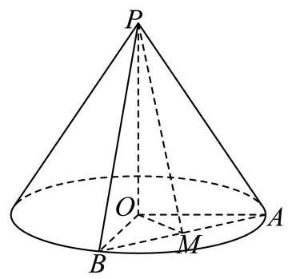
因为 O A = O B = 1 , O A ⊥ O B {OA} = {OB} = 1,{OA} \bot {OB} O A = OB = 1 , O A ⊥ OB
所以 O M = 1 2 A B = 2 2 , tan ∠ P M O = P O O M = 6 {OM} = \frac{1}{2}{AB} = \frac{\sqrt{2}}{2},\tan \angle {PMO} = \frac{PO}{OM} = \sqrt{6} OM = 2 1 A B = 2 2 , tan ∠ PMO = OM PO = 6
所以二面角 P − A B − O P - {AB} - O P − A B − O 6 \sqrt{6} 6
闵行 · 第18题 ★★★☆☆ · 教师预估 本题资料或解析有待核事项，预览不可作为已审定成品。
如图,圆柱 O O 1 O{O}_{1} O O 1 A B B 1 A 1 {AB}{B}_{1}{A}_{1} A B B 1 A 1 M N {MN} MN O O O ∠ B O M = π 3 \angle {BOM} = \frac{\pi }{3} ∠ BOM = 3 π
(1)求异面直线 A 1 N {A}_{1}N A 1 N B B 1 B{B}_{1} B B 1
(2)求点 A A A A 1 M N {A}_{1}{MN} A 1 MN
考点： （1）空间向量求异面直线夹角；（2）点到平面的距离。难度依据： 圆柱异面角与点面距；空间向量求角与距离
核查说明： 原解坐标差的纵坐标疑似符号错误，需核PDF并复算。
展开答案与解析 【答案】 (1) arccos 2 5 5 \arccos \frac{2\sqrt{5}}{5} arccos 5 2 5
(2) 4 57 19 \frac{4\sqrt{57}}{19} 19 4 57
【解析】
【分析】 (1) 建立空间直角坐标系, 把异面直线所成角转化为两条异面直线的方向向量的夹角求解
(2)通过(1)空间直角坐标系利用向量运算求点到平面距离
【小问 1 详解】
根据题意建立以底面圆心 O O O A B {AB} A B y y y O O 1 O{O}_{1} O O 1 z z z A B {AB} A B x x x
则 A ( 0 , − 2 , 0 ) , B ( 0 , 2 , 0 ) , A 1 ( 0 , − 2 , 4 ) , B 1 ( 0 , 2 , 4 ) , O ( 0 , 0 , 0 ) , O 1 ( 0 , 0 , 4 ) A\left( {0, - 2,0}\right) , B\left( {0,2,0}\right) ,{A}_{1}\left( {0, - 2,4}\right) ,{B}_{1}\left( {0,2,4}\right) , O\left( {0,0,0}\right) ,{O}_{1}\left( {0,0,4}\right) A ( 0 , − 2 , 0 ) , B ( 0 , 2 , 0 ) , A 1 ( 0 , − 2 , 4 ) , B 1 ( 0 , 2 , 4 ) , O ( 0 , 0 , 0 ) , O 1 ( 0 , 0 , 4 )
因为 ∠ B O M = π 3 \angle {BOM} = \frac{\pi }{3} ∠ BOM = 3 π M ( − 3 , 1 , 0 ) M\left( {-{\sqrt{3},1},0}\right) M ( − 3 , 1 , 0 ) N ( 3 , − 1 , 0 ) N\left( {\sqrt{3}, - 1,0}\right) N ( 3 , − 1 , 0 )
所以 A 1 N → = ( 3 , − 1 , − 4 ) , B B 1 → = ( 0 , 0 , 4 ) , A 1 N → ⋅ B B 1 → = − 16 \overrightarrow{{A}_{1}N} = \left( {\sqrt{3}, - 1, - 4}\right) ,\overrightarrow{B{B}_{1}} = \left( {0,0,4}\right) ,\overrightarrow{{A}_{1}N} \cdot \overrightarrow{B{B}_{1}} = - {16} A 1 N = ( 3 , − 1 , − 4 ) , B B 1 = ( 0 , 0 , 4 ) , A 1 N ⋅ B B 1 = − 16
∣ A 1 N → ∣ = ( 3 ) 2 + ( − 1 ) 2 + ( − 4 ) 2 = 20 = 2 5 , ∣ B B 1 → ∣ = 4 \left| \overrightarrow{{A}_{1}N}\right| = \sqrt{{\left( \sqrt{3}\right) }^{2} + {\left( -1\right) }^{2} + {\left( -4\right) }^{2}} = \sqrt{20} = 2\sqrt{5},\left| \overrightarrow{B{B}_{1}}\right| = 4 A 1 N = ( 3 ) 2 + ( − 1 ) 2 + ( − 4 ) 2 = 20 = 2 5 , B B 1 = 4
设异面直线所成角为 θ \theta θ cos θ = ∣ A 1 N → ⋅ B B 1 → ∣ ∣ A 1 N → ∣ ⋅ ∣ B B 1 → ∣ = 16 2 5 × 4 = 2 5 5 \cos \theta = \frac{\left| \overrightarrow{{A}_{1}N} \cdot \overrightarrow{B{B}_{1}}\right| }{\left| \overrightarrow{{A}_{1}N}\right| \cdot \left| \overrightarrow{B{B}_{1}}\right| } = \frac{16}{2\sqrt{5} \times 4} = \frac{2\sqrt{5}}{5} cos θ = A 1 N ⋅ B B 1 A 1 N ⋅ B B 1 = 2 5 × 4 16 = 5 2 5 A 1 N {A}_{1}N A 1 N B B 1 B{B}_{1} B B 1 arccos 2 5 5 \arccos \frac{2\sqrt{5}}{5} arccos 5 2 5
【小问 2 详解】
A 1 M → = ( − 3 , 3 , − 4 ) , A 1 N → = ( 3 , 1 , − 4 ) , N A → = ( − 3 , − 1 , 0 ) , \overrightarrow{{A}_{1}M} = \left( {-\sqrt{3},3, - 4}\right) ,\overrightarrow{{A}_{1}N} = \left( {\sqrt{3},1, - 4}\right) ,\overrightarrow{NA} = \left( {-\sqrt{3}, - 1,0}\right) , A 1 M = ( − 3 , 3 , − 4 ) , A 1 N = ( 3 , 1 , − 4 ) , N A = ( − 3 , − 1 , 0 ) ,
设平面 A 1 M N {A}_{1}{MN} A 1 MN n → = ( x , y , z ) \overrightarrow{n} = \left( {x, y, z}\right) n = ( x , y , z )
则由 A 1 M → ⋅ n → = 0 , A 1 N → ⋅ n → = 0 \overrightarrow{{A}_{1}M} \cdot \overrightarrow{n} = 0,\overrightarrow{{A}_{1}N} \cdot \overrightarrow{n} = 0 A 1 M ⋅ n = 0 , A 1 N ⋅ n = 0 { − 3 x + 3 y − 4 z = 0 3 x + y − 4 z = 0 \left\{ \begin{matrix} - \sqrt{3}x + {3y} - {4z} = 0 \\ \sqrt{3}x + y - {4z} = 0 \end{matrix}\right. { − 3 x + 3 y − 4 z = 0 3 x + y − 4 z = 0 y = 2 y = 2 y = 2 z = 1 , x = 2 3 3 z = 1, x = \frac{2\sqrt{3}}{3} z = 1 , x = 3 2 3 n → = ( 2 3 3 , 2 , 1 ) \overrightarrow{n} = \left( {\frac{2\sqrt{3}}{3},2,1}\right) n = ( 3 2 3 , 2 , 1 )
设点 A A A A 1 M N {A}_{1}{MN} A 1 MN d d d d = ∣ N A → ⋅ n → ∣ ∣ n → ∣ = ∣ ( − 3 , − 1 , 0 ) ⋅ ( 2 3 3 , 2 , 1 ) ∣ ( 2 3 3 ) 2 + 2 2 + 1 2 = 4 57 19 d = \frac{\left| \overrightarrow{NA} \cdot \overrightarrow{n}\right| }{\left| \overrightarrow{n}\right| } = \frac{\left| \left( -\sqrt{3}, - 1,0\right) \cdot \left( \frac{2\sqrt{3}}{3},2,1\right) \right| }{\sqrt{{\left( \frac{2\sqrt{3}}{3}\right) }^{2} + {2}^{2} + {1}^{2}}} = \frac{4\sqrt{57}}{19} d = ∣ n ∣ N A ⋅ n = ( 3 2 3 ) 2 + 2 2 + 1 2 ( − 3 , − 1 , 0 ) ⋅ ( 3 2 3 , 2 , 1 ) = 19 4 57
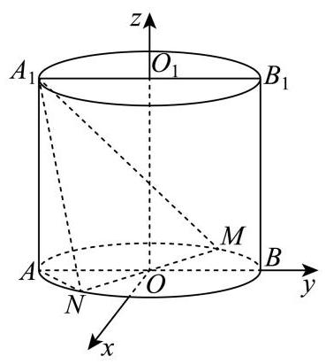
青浦 · 第19题 ★★★☆☆ · 教师预估 如图,在三棱锥 P − A B C P - {ABC} P − A BC A B {AB} A B A B C {ABC} A BC △ P A C \bigtriangleup {PAC} △ P A C E E E F F F P C {PC} PC P B {PB} PB P B = A B {PB} = {AB} PB = A B B C = 4 {BC} = 4 BC = 4
(1)求证:平面 P A C ⊥ {PAC} \bot P A C ⊥ A B C {ABC} A BC
(2)求直线 A B {AB} A B A E F {AEF} A EF
考点： (1) 线面垂直推出面面垂直；(2) 空间坐标和法向量求线面角。难度依据： 面面垂直与线面角；空间坐标及法向量
展开答案与解析 【答案】 (1) 证明见解析
(2) 5 10 \frac{\sqrt{5}}{10} 10 5
【解析】
【分析】 (1) 先利用直径所对圆周角为直角和勾股定理得到线线垂直, 再利用线面垂直和面面垂直的判定定理进行证明;
(2)建立空间坐标系，写出相关点的坐标，求出直线的方向向量和平面的法向量，再利用线面角的向量法进行求解.
【小问 1 详解】
证明: 由题意知 B C ⊥ A C {BC} \bot {AC} BC ⊥ A C
则 A B = A C 2 + B C 2 = 2 5 {AB} = \sqrt{A{C}^{2} + B{C}^{2}} = 2\sqrt{5} A B = A C 2 + B C 2 = 2 5 P B = A B = 2 5 {PB} = {AB} = 2\sqrt{5} PB = A B = 2 5
又 B C = 4 , P C = 2 {BC} = 4,{PC} = 2 BC = 4 , PC = 2 P B 2 = P C 2 + B C 2 P{B}^{2} = P{C}^{2} + B{C}^{2} P B 2 = P C 2 + B C 2 P C ⊥ B C {PC} \bot {BC} PC ⊥ BC
又 P C ∩ A C = C {PC} \cap {AC} = C PC ∩ A C = C B C ⊥ {BC} \bot BC ⊥ P A C {PAC} P A C
又 B C ⊂ {BC} \subset BC ⊂ A B C {ABC} A BC P A C ⊥ {PAC} \bot P A C ⊥ A B C {ABC} A BC
【小问 2 详解】
解: 以 C C C C A , C B {CA},{CB} C A , CB x x x y y y C C C A B C {ABC} A BC z z z
则 A ( 2 , 0 , 0 ) , B ( 0 , 4 , 0 ) , P ( 1 , 0 , 3 ) , E ( 1 2 , 0 , 3 2 ) , F ( 1 2 , 2 , 3 2 ) A\left( {2,0,0}\right) , B\left( {0,4,0}\right) , P\left( {1,0,\sqrt{3}}\right) , E\left( {\frac{1}{2},0,\frac{\sqrt{3}}{2}}\right) , F\left( {\frac{1}{2},2,\frac{\sqrt{3}}{2}}\right) A ( 2 , 0 , 0 ) , B ( 0 , 4 , 0 ) , P ( 1 , 0 , 3 ) , E ( 2 1 , 0 , 2 3 ) , F ( 2 1 , 2 , 2 3 )
所以 A E → = ( − 3 2 , 0 , 3 2 ) , E F → = ( 0 , 2 , 0 ) , A B → = ( − 2 , 4 , 0 ) \overrightarrow{AE} = \left( {-\frac{3}{2},0,\frac{\sqrt{3}}{2}}\right) ,\overrightarrow{EF} = \left( {0,2,0}\right) ,\overrightarrow{AB} = \left( {-2,4,0}\right) A E = ( − 2 3 , 0 , 2 3 ) , EF = ( 0 , 2 , 0 ) , A B = ( − 2 , 4 , 0 )
设平面 A E F {AEF} A EF m → = ( x , y , z ) \overrightarrow{m} = \left( {x, y, z}\right) m = ( x , y , z ) { A E → ⋅ m → = − 3 x 2 + 3 z 2 = 0 , E F → ⋅ m → = 2 y = 0 , \left\{ \begin{matrix} \overrightarrow{AE} \cdot \overrightarrow{m} = - \frac{3x}{2} + \frac{\sqrt{3}z}{2} = 0, \\ \overrightarrow{EF} \cdot \overrightarrow{m} = {2y} = 0, \end{matrix}\right. { A E ⋅ m = − 2 3 x + 2 3 z = 0 , EF ⋅ m = 2 y = 0 ,
则 y = 0 y = 0 y = 0 z = 3 z = \sqrt{3} z = 3 m → = ( 1 , 0 , 3 ) \overrightarrow{m} = \left( {1,0,\sqrt{3}}\right) m = ( 1 , 0 , 3 )
设直线 A B {AB} A B A E F {AEF} A EF θ \theta θ sin θ = ∣ cos θ A B → , m → θ ∣ = ∣ A B → ⋅ m → ∣ A B → ∣ ⋅ ∣ m → ∣ ∣ = 5 10 \sin \theta = \left| {\cos \theta \overrightarrow{AB},\overrightarrow{m}\theta }\right| = \left| \frac{\overrightarrow{AB} \cdot \overrightarrow{m}}{\left| \overrightarrow{AB}\right| \cdot \left| \overrightarrow{m}\right| }\right| = \frac{\sqrt{5}}{10} sin θ = cos θ A B , m θ = A B ⋅ ∣ m ∣ A B ⋅ m = 10 5
所以直线 A B {AB} A B A E F {AEF} A EF 5 10 \frac{\sqrt{5}}{10} 10 5
静安 · 第9题 ★★★☆☆ · 教师预估 在代表我国古代数学成就的经典著作《九章算术》中, 称如下图中的多面体 ABCDEF 为 “刍(chu)甍(meng)”. 若底面 A B C D {ABCD} A BC D E F = 2 {EF} = 2 EF = 2 E F / / A B {EF}//{AB} EF // A B △ A E D \bigtriangleup {AED} △ A E D △ B F C \bigtriangleup {BFC} △ BFC ∠ A E D = ∠ B F C = 90 ∘ \angle {AED} = \angle {BFC} = {90}^{ \circ } ∠ A E D = ∠ BFC = 90 ∘ F C {FC} FC A B C D {ABCD} A BC D
考点： 刍甍与线面角。难度依据： 刍甍与线面角
展开答案与解析 【答案】 6 4 # # 1 4 6 \frac{\sqrt{6}}{4}\# \# \frac{1}{4}\sqrt{6} 4 6 ## 4 1 6
【解析】
【分析】 设 A D 、 B C {AD}\text{ 、 }{BC} A D 、 BC M 、 N , E 、 F M\text{ 、 }N, E\text{ 、 }F M 、 N , E 、 F E ′ 、 F ′ {E}^{\prime }\text{ 、 }{F}^{\prime } E ′ 、 F ′ ∠ F C F ′ \angle {FC}{F}^{\prime } ∠ FC F ′ F C {FC} FC A B C D {ABCD} A BC D
【详解】 设 A D 、 B C {AD}\text{ 、 }{BC} A D 、 BC M 、 N , E 、 F M\text{ 、 }N, E\text{ 、 }F M 、 N , E 、 F E ′ 、 F ′ {E}^{\prime }\text{ 、 }{F}^{\prime } E ′ 、 F ′ E ′ 、 F ′ {E}^{\prime }\text{ 、 }{F}^{\prime } E ′ 、 F ′ M N {MN} MN
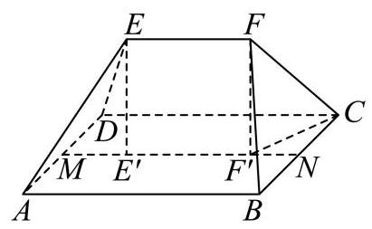
∴ ∠ F C F ′ \therefore \angle {FC}{F}^{\prime } ∴ ∠ FC F ′ F C {FC} FC A B C D {ABCD} A BC D
又 M N = A B = B C = 4 , E ′ F ′ = E F = 2 {MN} = {AB} = {BC} = 4,{E}^{\prime }{F}^{\prime } = {EF} = 2 MN = A B = BC = 4 , E ′ F ′ = EF = 2
∴ N F ′ = 1 , C F ′ 2 = C N 2 + B F ′ 2 = 5 \therefore N{F}^{\prime } = 1,\;C{F}^{\prime 2} = \sqrt{C{N}^{2} + B{F}^{\prime 2}} = \sqrt{5} ∴ N F ′ = 1 , C F ′2 = C N 2 + B F ′2 = 5
又 △ B F C \bigtriangleup {BFC} △ BFC ∠ B F C = 90 ∘ \angle {BFC} = {90}^{ \circ } ∠ BFC = 90 ∘
∴ C F = 2 2 \therefore {CF} = 2\sqrt{2} ∴ CF = 2 2 F F ′ = C F 2 − C F ′ 2 = 3 F{F}^{\prime } = \sqrt{C{F}^{2} - C{F}^{\prime 2}} = \sqrt{3} F F ′ = C F 2 − C F ′2 = 3
∴ sin ∠ F C F ′ = F F ′ C F = 3 2 2 = 6 4 \therefore \sin \angle {FC}{F}^{\prime } = \frac{F{F}^{\prime }}{CF} = \frac{\sqrt{3}}{2\sqrt{2}} = \frac{\sqrt{6}}{4} ∴ sin ∠ FC F ′ = CF F F ′ = 2 2 3 = 4 6
静安 · 第19题 ★★★☆☆ · 教师预估 如图,在长方体 A B C D − A 1 B 1 C 1 D 1 {ABCD} - {A}_{1}{B}_{1}{C}_{1}{D}_{1} A BC D − A 1 B 1 C 1 D 1 A B = 4 , B C = 3 , C C 1 = 2 , M {AB} = 4,{BC} = 3, C{C}_{1} = 2, M A B = 4 , BC = 3 , C C 1 = 2 , M A B {AB} A B
(1)求四棱锥 A 1 − A M C D {A}_{1} - {AMCD} A 1 − A MC D
(2)求平面 A 1 A D D 1 {A}_{1}{AD}{D}_{1} A 1 A D D 1 A 1 M C {A}_{1}{MC} A 1 MC
考点： （1）棱锥体积；（2）二面角。难度依据： 棱锥体积与二面角
展开答案与解析 【答案】 (1) 6
(2) arccos ( 3 22 22 ) \arccos \left( \frac{3\sqrt{22}}{22}\right) arccos ( 22 3 22 )
【解析】
【分析】 (1) 直接利用棱锥的体积公式求解;
(2)通过建立空间直角坐标系，得到两个平面的法向量进而求解二面角即可.
【小问 1 详解】
因为底面 A M C D {AMCD} A MC D A M = 2 {AM} = 2 A M = 2 D C = 4 {DC} = 4 D C = 4 A D = 3 {AD} = 3 A D = 3
因此梯形面积 S A M C D = ( A M + D C ) 2 ⋅ A D = ( 2 + 4 ) 2 × 3 = 9 {S}_{AMCD} = \frac{\left( AM + DC\right) }{2} \cdot {AD} = \frac{\left( 2 + 4\right) }{2} \times 3 = 9 S A MC D = 2 ( A M + D C ) ⋅ A D = 2 ( 2 + 4 ) × 3 = 9
四棱锥的高为 A 1 {A}_{1} A 1 A B C D {ABCD} A BC D h = A A 1 = 2 h = A{A}_{1} = 2 h = A A 1 = 2
因此体积 V = 1 3 S A M C D ⋅ h = 1 3 × 9 × 2 = 6 V = \frac{1}{3}{S}_{AMCD} \cdot h = \frac{1}{3} \times 9 \times 2 = 6 V = 3 1 S A MC D ⋅ h = 3 1 × 9 × 2 = 6
【小问 2 详解】
以 D D D D A , D C , D D 1 {DA},{DC}, D{D}_{1} D A , D C , D D 1 x , y , z x, y, z x , y , z
根据题意得各点坐标 A ( 3 , 0 , 0 ) , M ( 3 , 2 , 0 ) , C ( 0 , 4 , 0 ) , A 1 ( 3 , 0 , 2 ) A\left( {3,0,0}\right) , M\left( {3,2,0}\right) , C\left( {0,4,0}\right) ,{A}_{1}\left( {3,0,2}\right) A ( 3 , 0 , 0 ) , M ( 3 , 2 , 0 ) , C ( 0 , 4 , 0 ) , A 1 ( 3 , 0 , 2 )
平面 A 1 A D D 1 {A}_{1}{AD}{D}_{1} A 1 A D D 1 m → = ( 0 , 1 , 0 ) \overrightarrow{m} = \left( {0,1,0}\right) m = ( 0 , 1 , 0 )
在平面 A 1 M C {A}_{1}{MC} A 1 MC A 1 M → = ( 0 , 2 , − 2 ) , M C → = ( − 3 , 2 , 0 ) \overrightarrow{{A}_{1}M} = \left( {0,2, - 2}\right) ,\overrightarrow{MC} = \left( {-3,2,0}\right) A 1 M = ( 0 , 2 , − 2 ) , MC = ( − 3 , 2 , 0 ) A 1 M C {A}_{1}{MC} A 1 MC n → = ( x , y , z ) , \overrightarrow{n} = \left( {x, y, z}\right) , n = ( x , y , z ) ,
则 { n → ⋅ A 1 M → = 2 y − 2 z = 0 n → ⋅ M C → = − 3 x + 2 y = 0 \left\{ \begin{array}{l} \overrightarrow{n} \cdot \overrightarrow{{A}_{1}M} = {2y} - {2z} = 0 \\ \overrightarrow{n} \cdot \overrightarrow{MC} = - {3x} + {2y} = 0 \end{array}\right. { n ⋅ A 1 M = 2 y − 2 z = 0 n ⋅ MC = − 3 x + 2 y = 0 y = 3 y = 3 y = 3 x = 2 , z = 3 x = 2, z = 3 x = 2 , z = 3 n → = ( 2 , 3 , 3 ) \overrightarrow{n} = \left( {2,3,3}\right) n = ( 2 , 3 , 3 )
设锐二面角为 θ \theta θ cos θ = ∣ m → ⋅ n → ∣ ∣ m → ∣ ⋅ ∣ n → ∣ = 3 1 × 2 2 + 3 2 + 3 2 = 3 22 22 \cos \theta = \frac{\left| \overrightarrow{m} \cdot \overrightarrow{n}\right| }{\left| \overrightarrow{m}\right| \cdot \left| \overrightarrow{n}\right| } = \frac{3}{1 \times \sqrt{{2}^{2} + {3}^{2} + {3}^{2}}} = \frac{3\sqrt{22}}{22} cos θ = ∣ m ∣ ⋅ ∣ n ∣ ∣ m ⋅ n ∣ = 1 × 2 2 + 3 2 + 3 2 3 = 22 3 22
因此锐二面角大小为 arccos ( 3 22 22 ) \arccos \left( \frac{3\sqrt{22}}{22}\right) arccos ( 22 3 22 )
黄浦 · 第18题 ★★★☆☆ · 教师预估 本题资料或解析有待核事项，预览不可作为已审定成品。
如图，在直三棱柱 A B C − A 1 B 1 C 1 {ABC} - {A}_{1}{B}_{1}{C}_{1} A BC − A 1 B 1 C 1 D D D E E E B C 、 C C 1 {BC}\text{ 、 }C{C}_{1} BC 、 C C 1 D D D C ) C) C ) A D ⊥ D E {AD} \bot {DE} A D ⊥ D E
(1)求证:平面 A D E ⊥ {ADE} \bot A D E ⊥ B C C 1 B 1 {BC}{C}_{1}{B}_{1} BC C 1 B 1
(2)若 A B C {ABC} A BC B C = C C 1 {BC} = C{C}_{1} BC = C C 1 A B C − A 1 B 1 C 1 {ABC} - {A}_{1}{B}_{1}{C}_{1} A BC − A 1 B 1 C 1 E − A D C E - {ADC} E − A D C A 1 E {A}_{1}E A 1 E A D E {ADE} A D E
考点： （1）线面垂直证明面面垂直；（2）体积比确定点位置并求线面角。难度依据： 面面垂直与线面角
核查说明： 答案解析第5486字符附近：损坏字符或字体覆盖风险，需回源并视觉检查（底稿扫描记录）
展开答案与解析 【答案】 (1) 证明见解析
(2) arcsin 10 5 \arcsin \frac{\sqrt{10}}{5} arcsin 5 10
【解析】
【分析】 (1) 证明出 A D ⊥ {AD} \bot A D ⊥ B C C 1 B 1 {BC}{C}_{1}{B}_{1} BC C 1 B 1
(2)解法一:设 B C = C C 1 = 2 {BC} = {C{C}_{1}} = 2 BC = C C 1 = 2 V A B C − A 1 B 1 C 1 = 12 V 三 棱 锥 E − A E C {V}_{{ABC} - {A}_{1}{B}_{1}{C}_{1}} = {{12}{V}_{{\text{ 三 }\text{ 棱 }\text{ 锥 }}{E - {AEC}}}} V A BC − A 1 B 1 C 1 = 12 V 三 棱 锥 E − A EC C E {CE} CE A A A C B → 、 A D → 、 A A 1 → \overrightarrow{CB}\text{ 、 }\overrightarrow{AD}\text{ 、 }\overrightarrow{A{A}_{1}} CB 、 A D 、 A A 1 x 、 y 、 z x\text{ 、 }y\text{ 、 }z x 、 y 、 z A 1 E {A}_{1}E A 1 E A D E {ADE} A D E
解法二: 连接 A 1 D {A}_{1}D A 1 D A 1 {A}_{1} A 1 A 1 G ⊥ {A}_{1}G \bot A 1 G ⊥ A D E {ADE} A D E G G G G E {GE} GE ∠ A 1 E G \angle {A}_{1}{EG} ∠ A 1 EG A 1 E {A}_{1}E A 1 E A D E {ADE} A D E A C {AC} A C M M M B M {BM} BM C M {CM} CM N N N D N {DN} D N D N ⊥ {DN}\bot D N ⊥ A C C 1 A 1 {AC}{C}_{1}{A}_{1} A C C 1 A 1 A 1 G {A}_{1}G A 1 G F F F B 1 C 1 {B}_{1}{C}_{1} B 1 C 1 A 1 F 、 D F 、 E F {A}_{1}F\text{ 、 }{DF}\text{ 、 }{EF} A 1 F 、 D F 、 EF A 1 F / / {A}_{1}F// A 1 F // A D E {ADE} A D E A 1 {A}_{1} A 1 F F F A D E {ADE} A D E E F ⊥ {EF} \bot EF ⊥ A D E {ADE} A D E A 1 {A}_{1} A 1 A D E {ADE} A D E E F {EF} EF A 1 E {A}_{1}E A 1 E
【小问 1 详解】
因为三棱柱 A B C − A 1 B 1 C 1 {ABC} - {A}_{1}{B}_{1}{C}_{1} A BC − A 1 B 1 C 1 C C 1 ⊥ C{C}_{1} \bot C C 1 ⊥ A B C {ABC} A BC
又 A D ⊂ {AD} \subset A D ⊂ A B C {ABC} A BC C C 1 ⊥ A D C{C}_{1} \bot {AD} C C 1 ⊥ A D
又 A D ⊥ D E , C C 1 ∩ D E = E , C C 1 、 D E ⊂ {AD} \bot {DE}, C{C}_{1} \cap {DE} = E, C{C}_{1}\text{ 、 }{DE} \subset A D ⊥ D E , C C 1 ∩ D E = E , C C 1 、 D E ⊂ B C C 1 B 1 {BC}{C}_{1}{B}_{1} BC C 1 B 1 A D ⊥ {AD} \bot A D ⊥ B C C 1 B 1 {BC}{C}_{1}{B}_{1} BC C 1 B 1 A D ⊂ {AD} \subset A D ⊂ A D E {ADE} A D E A D E ⊥ {ADE} \bot A D E ⊥ B C C 1 B 1 {BC}{C}_{1}{B}_{1} BC C 1 B 1
【小问 2 详解】
解法一: 由 A D ⊥ {AD} \bot A D ⊥ B C C 1 B 1 , B C ⊂ {BC}{C}_{1}{B}_{1},{BC} \subset BC C 1 B 1 , BC ⊂ B C C 1 B 1 {BC}{C}_{1}{B}_{1} BC C 1 B 1 A D ⊥ B C {AD} \bot {BC} A D ⊥ BC
又因为 A B C {ABC} A BC B D = C D {BD} = {CD} B D = C D
设 B C = C C 1 = 2 {BC} = C{C}_{1} = 2 BC = C C 1 = 2 V A B C − A 1 B 1 C 1 = 12 V 三棱锥 E − A D C {V}_{{ABC} - {A}_{1}{B}_{1}{C}_{1}} = {12}{V}_{\text{ 三棱锥 }E - {ADC}} V A BC − A 1 B 1 C 1 = 12 V 三棱锥 E − A D C S △ A B C = 2 S △ A D C {S}_{\bigtriangleup {ABC}} = 2{S}_{\bigtriangleup {ADC}} S △ A BC = 2 S △ A D C
可得 2 S △ A D C ⋅ 2 = 12 ⋅ 1 3 ⋅ S △ A D C ⋅ C E 2{S}_{\bigtriangleup {ADC}} \cdot 2 = {12} \cdot \frac{1}{3} \cdot {S}_{\bigtriangleup {ADC}} \cdot {CE} 2 S △ A D C ⋅ 2 = 12 ⋅ 3 1 ⋅ S △ A D C ⋅ CE C E = 1 {CE} = 1 CE = 1
以点 A A A C B → \overrightarrow{CB} CB A D → \overrightarrow{AD} A D A A 1 → \overrightarrow{A{A}_{1}} A A 1 x x x y y y z z z
则 A 1 ( 0 , 0 , 2 ) 、 D ( 0 , 0 , 3 ) 、 A ( 0 , 0 , 0 ) 、 E ( − 1 , 3 , 1 ) {A}_{1}\left( {0,0,2}\right) \text{ 、 }D\left( {0,0,\sqrt{3}}\right) \text{ 、 }A\left( {0,0,0}\right) \text{ 、 }E\left( {-1,\sqrt{3},1}\right) A 1 ( 0 , 0 , 2 ) 、 D ( 0 , 0 , 3 ) 、 A ( 0 , 0 , 0 ) 、 E ( − 1 , 3 , 1 )
所以 A D → = ( 0 , 3 , 0 ) , A E → = ( − 1 , 3 , 1 ) , A 1 E → = ( − 1 , 3 , − 1 ) \overrightarrow{AD} = \left( {0,\sqrt{3},0}\right) ,\overrightarrow{AE} = \left( {-1,\sqrt{3},1}\right) ,\overrightarrow{{A}_{1}E} = \left( {-1,\sqrt{3}, - 1}\right) A D = ( 0 , 3 , 0 ) , A E = ( − 1 , 3 , 1 ) , A 1 E = ( − 1 , 3 , − 1 )
设平面 A D E {ADE} A D E n → = ( x , y , z ) \overrightarrow{n} = \left( {x, y, z}\right) n = ( x , y , z )
则 { n → ⋅ A D → = 3 y = 0 n → ⋅ A E → = − x + 3 y + z = 0 \left\{ \begin{array}{l} \overrightarrow{n} \cdot \overrightarrow{AD} = \sqrt{3}y = 0 \\ \overrightarrow{n} \cdot \overrightarrow{AE} = - x + \sqrt{3}y + z = 0 \end{array}\right. { n ⋅ A D = 3 y = 0 n ⋅ A E = − x + 3 y + z = 0 x = 1 x = 1 x = 1 n → = ( 1 , 0 , 1 ) \overrightarrow{n} = \left( {1,0,1}\right) n = ( 1 , 0 , 1 )
设 A 1 E {A}_{1}E A 1 E A D E {ADE} A D E a a a sin a = ∣ n → ⋅ A 1 E → ∣ ∣ n → ∣ ⋅ ∣ A 1 E → ∣ = 2 2 ⋅ 5 = 10 5 \sin a = \frac{\left| \overrightarrow{n} \cdot \overrightarrow{{A}_{1}E}\right| }{\left| \overrightarrow{n}\right| \cdot \left| \overrightarrow{{A}_{1}E}\right| } = \frac{2}{\sqrt{2} \cdot \sqrt{5}} = \frac{\sqrt{10}}{5} sin a = ∣ n ∣ ⋅ A 1 E n ⋅ A 1 E = 2 ⋅ 5 2 = 5 10
所以 A 1 E {A}_{1}E A 1 E A D E {ADE} A D E arcsin 10 5 \arcsin \frac{\sqrt{10}}{5} arcsin 5 10
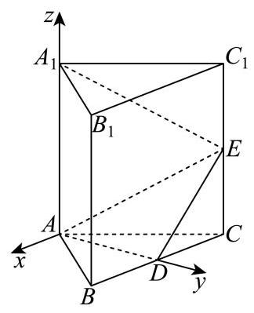
解法二: 连接 A 1 D {A}_{1}D A 1 D A 1 {A}_{1} A 1 A 1 G ⊥ {A}_{1}G \bot A 1 G ⊥ A D E {ADE} A D E G G G G E {GE} GE ∠ A 1 E G \angle {A}_{1}{EG} ∠ A 1 EG A 1 E {A}_{1}E A 1 E A D E {ADE} A D E
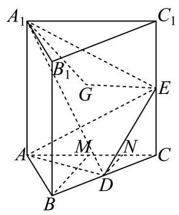
取 A C {AC} A C M M M B M {BM} BM C M {CM} CM N N N D N {DN} D N
因为 A B C {ABC} A BC M M M A C {AC} A C B M ⊥ A C {BM} \bot {AC} BM ⊥ A C
因为 D D D N N N B C {BC} BC C M {CM} CM D N / / B M {DN}//{BM} D N // BM D N ⊥ A C {DN} \bot {AC} D N ⊥ A C
因为三棱柱 A B C − A 1 B 1 C 1 {ABC} - {A}_{1}{B}_{1}{C}_{1} A BC − A 1 B 1 C 1 A A 1 ⊥ A{A}_{1} \bot A A 1 ⊥ A B C {ABC} A BC
因为 D N ⊂ {DN} \subset D N ⊂ A B C {ABC} A BC D N ⊥ {DN} \bot D N ⊥ A A 1 C 1 C A{A}_{1}{C}_{1}C A A 1 C 1 C D N = C D sin 60 ∘ = 3 2 {DN} = {CD}\sin {60}^{ \circ } = \frac{\sqrt{3}}{2} D N = C D sin 60 ∘ = 2 3
因为 S △ A A 1 E = 1 2 A A 1 ⋅ A C = 1 2 × 2 2 = 2 {S}_{\bigtriangleup {A{A}_{1}}E} = \frac{1}{2}A{A}_{1} \cdot {AC} = \frac{1}{2} \times {2}^{2} = 2 S △ A A 1 E = 2 1 A A 1 ⋅ A C = 2 1 × 2 2 = 2 V 三棱锥 D − A A 1 E = 1 3 S △ A A 1 E ⋅ D N = 1 3 × 2 × 3 2 = 3 3 {V}_{\text{ 三棱锥 }D - A{A}_{1}E} = \frac{1}{3}{S}_{\bigtriangleup {A{A}_{1}E}} \cdot {DN} = \frac{1}{3} \times 2 \times \frac{\sqrt{3}}{2} = \frac{\sqrt{3}}{3} V 三棱锥 D − A A 1 E = 3 1 S △ A A 1 E ⋅ D N = 3 1 × 2 × 2 3 = 3 3
因为 A D ⊥ {AD} \bot A D ⊥ B C C 1 B 1 , D E ⊂ {BC}{C}_{1}{B}_{1},{DE} \subset BC C 1 B 1 , D E ⊂ B C C 1 B 1 {BC}{C}_{1}{B}_{1} BC C 1 B 1 A D ⊥ D E {AD} \bot {DE} A D ⊥ D E
又因为 A D = A B sin 60 ∘ = 2 × 3 2 = 3 , D E = C D 2 + C E 2 = 1 + 1 = 2 {AD} = {AB}\sin {60}^{ \circ } = 2 \times \frac{\sqrt{3}}{2} = \sqrt{3},{DE} = \sqrt{C{D}^{2} + C{E}^{2}} = \sqrt{1 + 1} = \sqrt{2} A D = A B sin 60 ∘ = 2 × 2 3 = 3 , D E = C D 2 + C E 2 = 1 + 1 = 2
所以 S △ A D E = 1 2 A D ⋅ D E = 1 2 × 3 × 2 = 6 2 {S}_{\bigtriangleup {ADE}} = \frac{1}{2}{AD} \cdot {DE} = \frac{1}{2} \times \sqrt{3} \times \sqrt{2} = \frac{\sqrt{6}}{2} S △ A D E = 2 1 A D ⋅ D E = 2 1 × 3 × 2 = 2 6
所以 V 三棱锥 A 1 − A D E = 1 3 S △ A D E ⋅ A 1 G = 1 3 × 6 2 × A 1 G = 3 3 {V}_{\text{ 三棱锥 }{A}_{1} - {ADE}} = \frac{1}{3}{S}_{\bigtriangleup {ADE}} \cdot {A}_{1}G = \frac{1}{3} \times \frac{\sqrt{6}}{2} \times {A}_{1}G = \frac{\sqrt{3}}{3} V 三棱锥 A 1 − A D E = 3 1 S △ A D E ⋅ A 1 G = 3 1 × 2 6 × A 1 G = 3 3 A 1 G = 2 {A}_{1}G = \sqrt{2} A 1 G = 2
又 A 1 E = A 1 C 1 2 + C 1 E 2 = 2 2 + 1 2 = 5 {A}_{1}E = \sqrt{{A}_{1}{C}_{1}^{2} + {C}_{1}{E}^{2}} = \sqrt{{2}^{2} + {1}^{2}} = \sqrt{5} A 1 E = A 1 C 1 2 + C 1 E 2 = 2 2 + 1 2 = 5
故 sin ∠ A 1 E G = A 1 G A 1 E = 10 5 \sin \angle {A}_{1}{EG} = \frac{{A}_{1}G}{{A}_{1}E} = \frac{\sqrt{10}}{5} sin ∠ A 1 EG = A 1 E A 1 G = 5 10 ∠ A 1 E G = arcsin 10 5 \angle {A}_{1}{EG} = \arcsin \frac{\sqrt{10}}{5} ∠ A 1 EG = arcsin 5 10
所以 A 1 E {A}_{1}E A 1 E A D E {ADE} A D E arcsin 10 5 \arcsin \frac{\sqrt{10}}{5} arcsin 5 10
解法三: 设 F F F B 1 C 1 {B}_{1}{C}_{1} B 1 C 1 A 1 F 、 D F 、 E F {A}_{1}F\text{ 、 }{DF}\text{ 、 }{EF} A 1 F 、 D F 、 EF
因为 B B 1 / / C C 1 , B B 1 = C C 1 B{B}_{1}//C{C}_{1}, B{B}_{1} = C{C}_{1} B B 1 // C C 1 , B B 1 = C C 1 B B 1 C 1 C B{B}_{1}{C}_{1}C B B 1 C 1 C
所以 B C / / B 1 C 1 , B C = B 1 C 1 {BC}//{B}_{1}{C}_{1},{BC} = {B}_{1}{C}_{1} BC // B 1 C 1 , BC = B 1 C 1
因为 D D D F F F B C {BC} BC B 1 C 1 {B}_{1}{C}_{1} B 1 C 1 B D / / B 1 F {BD}//{B}_{1}F B D // B 1 F B D = B 1 F {BD} = {B}_{1}F B D = B 1 F
故四边形 B B 1 F D B{B}_{1}{FD} B B 1 F D B B 1 / / D F , B B 1 = D F B{B}_{1}//{DF}, B{B}_{1} = {DF} B B 1 // D F , B B 1 = D F
又因为 A A 1 / / B B 1 , A A 1 = B B 1 A{A}_{1}//B{B}_{1}, A{A}_{1} = B{B}_{1} A A 1 // B B 1 , A A 1 = B B 1 A A 1 / / D F , A A 1 = D F A{A}_{1}//{DF}, A{A}_{1} = {DF} A A 1 // D F , A A 1 = D F
所以四边形 A A 1 F D A{A}_{1}{FD} A A 1 F D A 1 F / / A D {A}_{1}F//{AD} A 1 F // A D
因为 A 1 F ⊄ {A}_{1}F \not\subset A 1 F ⊂ A D E , A D ⊂ {ADE},{AD} \subset A D E , A D ⊂ A D E {ADE} A D E A 1 F / / {A}_{1}F// A 1 F // A D E {ADE} A D E
点 A 1 {A}_{1} A 1 F F F A D E {ADE} A D E
由四边形 B C C 1 B 1 {BC}{C}_{1}{B}_{1} BC C 1 B 1 E E E F F F D D D C C 1 C{C}_{1} C C 1 B 1 C 1 {B}_{1}{C}_{1} B 1 C 1 B C {BC} BC
故 C D = C E = C 1 E = C 1 F {CD} = {CE} = {C}_{1}E = {C}_{1}F C D = CE = C 1 E = C 1 F ∠ F E C 1 = ∠ C E D = π 4 \angle {FE}{C}_{1} = \angle {CED} = \frac{\pi }{4} ∠ FE C 1 = ∠ CE D = 4 π ∠ F E D = π 2 \angle {FED} = \frac{\pi }{2} ∠ FE D = 2 π E F ⊥ E D {EF}\bot {ED} EF ⊥ E D A D E ⊥ {ADE} \bot A D E ⊥ B C C 1 B 1 , E F ⊂ {BC}{C}_{1}{B}_{1},{EF} \subset BC C 1 B 1 , EF ⊂ B C C 1 B 1 {BC}{C}_{1}{B}_{1} BC C 1 B 1 B C C 1 B 1 ∩ {BC}{C}_{1}{B}_{1} \cap BC C 1 B 1 ∩ A D E = D E {ADE} = {DE} A D E = D E
故 E F ⊥ {EF} \bot EF ⊥ A D E {ADE} A D E E F = C 1 E 2 + C 1 F 2 = 1 + 1 = 2 {EF} = \sqrt{{C}_{1}{E}^{2} + {C}_{1}{F}^{2}} = \sqrt{1 + 1} = \sqrt{2} EF = C 1 E 2 + C 1 F 2 = 1 + 1 = 2 A 1 {A}_{1} A 1 A D E {ADE} A D E 2 \sqrt{2} 2
又 A 1 E = A 1 C 1 2 + C 1 E 2 = 2 2 + 1 2 = 5 {A}_{1}E = \sqrt{{A}_{1}{C}_{1}^{2} + {C}_{1}{E}^{2}} = \sqrt{{2}^{2} + {1}^{2}} = \sqrt{5} A 1 E = A 1 C 1 2 + C 1 E 2 = 2 2 + 1 2 = 5
设 A 1 E {A}_{1}E A 1 E A D E {ADE} A D E θ \theta θ sin θ = 2 A 1 E = 2 5 = 10 5 \sin \theta = \frac{\sqrt{2}}{{A}_{1}E} = \frac{\sqrt{2}}{\sqrt{5}} = \frac{\sqrt{10}}{5} sin θ = A 1 E 2 = 5 2 = 5 10 θ = arcsin 10 5 \theta = \arcsin \frac{\sqrt{10}}{5} θ = arcsin 5 10
所以 A 1 E {A}_{1}E A 1 E A D E {ADE} A D E arcsin 10 5 \arcsin \frac{\sqrt{10}}{5} arcsin 5 10
截面、轨迹、动点与实际模型 从截面或可达点集确定几何约束，讨论定值、最值与长度。
嘉定 · 第12题 ★★★★☆ · 教师预估 本题资料或解析有待核事项，预览不可作为已审定成品。
在包装设计中,常用长度和宽度描述物体体型. 长度 l ( V ) l\left( V\right) l ( V ) t ( V ) t\left( V\right) t ( V ) R R R h h h l ( V ) t ( V ) \frac{l\left( V\right) }{t\left( V\right) } t ( V ) l ( V )
考点： 圆柱长度宽度与几何量；新定义及分段讨论；分段比值最小化。难度依据： 新定义下立体量分段最优化
核查说明： 题干与答案解析尚未逐页对照原卷，数学内容未独立终审。
展开答案与解析 【答案】 2 \sqrt{2} 2
【解析】
【分析】 分 h ≥ 2 R h \geq {2R} h ≥ 2 R h < 2 R h < {2R} h < 2 R
【详解】 圆柱体中,最远两点间的距离为 l ( V ) = ( 2 R ) 2 + h 2 l\left( V\right) = \sqrt{{\left( 2R\right) }^{2} + {h}^{2}} l ( V ) = ( 2 R ) 2 + h 2
当 h ≥ 2 R h \geq {2R} h ≥ 2 R h 2 R ≥ 1 \frac{h}{2R} \geq 1 2 R h ≥ 1 t ( V ) = 2 R , l ( V ) t ( V ) = ( 2 R ) 2 + h 2 2 R = 1 + ( h 2 R ) 2 ≥ 2 t\left( V\right) = {2R},\frac{l\left( V\right) }{t\left( V\right) } = \frac{\sqrt{{\left( 2R\right) }^{2} + {h}^{2}}}{2R} = \sqrt{1 + {\left( \frac{h}{2R}\right) }^{2}} \geq \sqrt{2} t ( V ) = 2 R , t ( V ) l ( V ) = 2 R ( 2 R ) 2 + h 2 = 1 + ( 2 R h ) 2 ≥ 2
当且仅当 h = 2 R h = {2R} h = 2 R
当 h < 2 R h < {2R} h < 2 R 2 R h > 1 \frac{2R}{h} > 1 h 2 R > 1 t ( V ) = h , l ( V ) t ( V ) = ( 2 R ) 2 + h 2 h = 1 + ( 2 R h ) 2 > 2 t\left( V\right) = h,\frac{l\left( V\right) }{t\left( V\right) } = \frac{\sqrt{{\left( 2R\right) }^{2} + {h}^{2}}}{h} = \sqrt{1 + {\left( \frac{2R}{h}\right) }^{2}} > \sqrt{2} t ( V ) = h , t ( V ) l ( V ) = h ( 2 R ) 2 + h 2 = 1 + ( h 2 R ) 2 > 2
所以 l ( V ) t ( V ) \frac{l\left( V\right) }{t\left( V\right) } t ( V ) l ( V ) 2 \sqrt{2} 2
宝山 · 第15题 ★★★★☆ · 教师预估 如图，正方体 A B C D − A 1 B 1 C 1 D 1 {ABCD} - {A}_{1}{B}_{1}{C}_{1}{D}_{1} A BC D − A 1 B 1 C 1 D 1 a a a A C 1 A{C}_{1} A C 1 a a a P Q R S W E {PQRSWE} PQRS W E L L L
A. S \mathrm{S} S L L L
B. S \mathrm{S} S L L L
C. S \mathrm{S} S L L L
D. S \mathrm{S} S L L L
考点： 正方体截面周长定值与面积变化。难度依据： 正方体截面周长定值与面积变化
展开答案与解析 【答案】 C
【解析】
【分析】 判断周长和面积是否为定值, 先判断截面各边之间的数量关系和位置关系, 将立体问题平面化求解即可.
【详解】 如图所示,
连接 B 1 D 1 , B 1 C , D 1 C {B}_{1}{D}_{1},{B}_{1}C,{D}_{1}C B 1 D 1 , B 1 C , D 1 C B 1 D 1 C {B}_{1}{D}_{1}C B 1 D 1 C A C 1 A{C}_{1} A C 1
又平面 a a a A C 1 A{C}_{1} A C 1 a / / a// a // B 1 D 1 C {B}_{1}{D}_{1}C B 1 D 1 C
同理连接 A 1 B , A 1 D , B D {A}_{1}B,{A}_{1}D,{BD} A 1 B , A 1 D , B D A 1 B D {A}_{1}{BD} A 1 B D A C 1 A{C}_{1} A C 1
又平面 a a a A C 1 A{C}_{1} A C 1 a / / a// a // A 1 B D {A}_{1}{BD} A 1 B D
又平面 a ∩ a \cap a ∩ A B B 1 A 1 = P Q {AB}{B}_{1}{A}_{1} = {PQ} A B B 1 A 1 = PQ A 1 B D ∩ {A}_{1}{BD} \cap A 1 B D ∩ A B B 1 A 1 = A 1 B {AB}{B}_{1}{A}_{1} = {A}_{1}B A B B 1 A 1 = A 1 B
从而可得 A 1 B / / P Q {A}_{1}B//{PQ} A 1 B // PQ W S / / C D 1 {WS}//C{D}_{1} W S // C D 1 A 1 B / / C D 1 {A}_{1}B//C{D}_{1} A 1 B // C D 1 W S / / P Q {WS}//{PQ} W S // PQ
同理可得 S R / / E P / / B D , Q R / / E W / / B 1 C {SR}//{EP}//{BD},{QR}//{EW}//{B}_{1}C SR // EP // B D , QR // E W // B 1 C P Q R S W E {PQRSWE} PQRS W E
由平行关系知, P Q R S W E {PQRSWE} PQRS W E 3 2 3\sqrt{2} 3 2
由平行关系知, P Q R S W E {PQRSWE} PQRS W E 120 ∘ {120}^{ \circ } 120 ∘ 2 \sqrt{2} 2
设 P Q = x {PQ} = x PQ = x Q R = 2 − x {QR} = \sqrt{2} - x QR = 2 − x P Q R S W E {PQRSWE} PQRS W E
S = 2 × 3 4 × ( 2 ) 2 − 3 4 x 2 − 3 4 ( 2 − x ) 2 = − 3 2 x 2 + 6 2 x + 3 2 S = 2 \times \frac{\sqrt{3}}{4} \times {\left( \sqrt{2}\right) }^{2} - \frac{\sqrt{3}}{4}{x}^{2} - \frac{\sqrt{3}}{4}{\left( \sqrt{2} - x\right) }^{2} = - \frac{\sqrt{3}}{2}{x}^{2} + \frac{\sqrt{6}}{2}x + \frac{\sqrt{3}}{2} S = 2 × 4 3 × ( 2 ) 2 − 4 3 x 2 − 4 3 ( 2 − x ) 2 = − 2 3 x 2 + 2 6 x + 2 3
从而可知 S \mathrm{S} S x x x
徐汇 · 第12题 ★★★★☆ · 教师预估 如图为一架农业无人机沿固定航线匀速飞行，并在某时刻向下喷洒农药的示意图. 将种植坡面视为坡角为 θ \theta θ 45 ∘ {45}^{ \circ } 45 ∘ L ( θ ) L\left( \theta \right) L ( θ ) 0 ∘ ≤ θ ≤ 15 ∘ {0}^{ \circ } \leq \theta \leq {15}^{ \circ } 0 ∘ ≤ θ ≤ 15 ∘ L ( θ ) L\left( \theta \right) L ( θ )
航线 无人机
考点： 垂直航线截面求喷洒带宽，再求三角函数最值。难度依据： 空间截面建模与坡角转化
展开答案与解析 【答案】 6.93
【解析】
作垂直于无人机航线与平面 a a a A A A a a a B C {BC} BC B C {BC} BC B H {BH} B H
作 A D ⊥ B C {AD} \bot {BC} A D ⊥ BC D , A D ⊥ B H D,{AD} \bot {BH} D , A D ⊥ B H H H H θ \theta θ ∠ H A D = θ \angle {HAD} = \theta ∠ H A D = θ
由题意得 ∠ B A H = ∠ C A H = 45 ∘ , ∠ B A C = 90 ∘ , A D = 3 \angle {BAH} = \angle {CAH} = {45}^{ \circ },\angle {BAC} = {90}^{ \circ },{AD} = 3 ∠ B A H = ∠ C A H = 45 ∘ , ∠ B A C = 90 ∘ , A D = 3
则 ∠ C A D = 45 ∘ − θ , ∠ D C A = 45 ∘ + θ \angle {CAD} = {45}^{ \circ } - \theta ,\angle {DCA} = {45}^{ \circ } + \theta ∠ C A D = 45 ∘ − θ , ∠ D C A = 45 ∘ + θ
所以 A C = A D cos ∠ C A D = 3 cos ( 45 ∘ − θ ) {AC} = \frac{AD}{\cos \angle {CAD}} = \frac{3}{\cos \left( {{45}^{ \circ } - \theta }\right) } A C = c o s ∠ C A D A D = c o s ( 45 ∘ − θ ) 3
B C = A C cos ∠ A C D = 3 cos ( 45 ∘ − θ ) cos ( 45 ∘ + θ ) = 3 sin ( 45 ∘ + θ ) cos ( 45 ∘ + θ ) {BC} = \frac{AC}{\cos \angle {ACD}} = \frac{3}{\cos \left( {{45}^{ \circ } - \theta }\right) \cos \left( {{45}^{ \circ } + \theta }\right) } = \frac{3}{\sin \left( {{45}^{ \circ } + \theta }\right) \cos \left( {{45}^{ \circ } + \theta }\right) } BC = c o s ∠ A C D A C = c o s ( 45 ∘ − θ ) c o s ( 45 ∘ + θ ) 3 = s i n ( 45 ∘ + θ ) c o s ( 45 ∘ + θ ) 3
= 6 sin ( 90 ∘ + 2 θ ) = 6 cos 2 θ , = \frac{6}{\sin \left( {{90}^{ \circ } + {2\theta }}\right) } = \frac{6}{\cos {2\theta }}, = s i n ( 90 ∘ + 2 θ ) 6 = c o s 2 θ 6 ,
因为 0 ∘ ≤ θ ≤ 15 ∘ {0}^{ \circ } \leq \theta \leq {15}^{ \circ } 0 ∘ ≤ θ ≤ 15 ∘ 0 ∘ ≤ 2 θ ≤ 30 ∘ , 3 2 ≤ cos 2 θ ≤ 1 {0}^{ \circ } \leq {2\theta } \leq {30}^{ \circ },\frac{\sqrt{3}}{2} \leq \cos {2\theta } \leq 1 0 ∘ ≤ 2 θ ≤ 30 ∘ , 2 3 ≤ cos 2 θ ≤ 1
B C max = 6 3 2 = 4 3 ≈ 6.93. B{C}_{\max } = \frac{6}{\frac{\sqrt{3}}{2}} = 4\sqrt{3} \approx {6.93}. B C m a x = 2 3 6 = 4 3 ≈ 6.93 .
浦东 · 第11题 ★★★☆☆ · 教师预估 某光影科技实验室为长方体空间, 底面是边长为 4 米的正方形, 高为 3 米. 为营造动态光影效果，在底面一个顶点处安装射灯 A A A I I I G G G G G G
考点： 建立空间坐标，用垂直数量积确定天花板圆轨迹。难度依据： 将空间垂直转化轨迹方程
展开答案与解析 【答案】 2 2 π 2\sqrt{2}\pi 2 2 π
【解析】
【详解】 如图建立空间直角坐标系:
则 A ( 4 , 0 , 0 ) , I ( 0 , 4 , 1 ) A\left( {4,0,0}\right) , I\left( {0,4,1}\right) A ( 4 , 0 , 0 ) , I ( 0 , 4 , 1 ) G ( x , y , 3 ) G\left( {x, y,3}\right) G ( x , y , 3 )
所以 A G → = ( x − 4 , y , 3 ) , I G → = ( x , y − 4 , 2 ) \overrightarrow{AG} = \left( {x - 4, y,3}\right) ,\overrightarrow{IG} = \left( {x, y - 4,2}\right) A G = ( x − 4 , y , 3 ) , I G = ( x , y − 4 , 2 )
因为 A G ⊥ I G {AG} \bot {IG} A G ⊥ I G A G → ⋅ I G → = ( x − 4 ) x + ( y − 4 ) y + 3 × 2 = 0 \overrightarrow{AG} \cdot \overrightarrow{IG} = \left( {x - 4}\right) x + \left( {y - 4}\right) y + 3 \times 2 = 0 A G ⋅ I G = ( x − 4 ) x + ( y − 4 ) y + 3 × 2 = 0
整理得 ( x − 2 ) 2 + ( y − 2 ) 2 = 2 {\left( x - 2\right) }^{2} + {\left( y - 2\right) }^{2} = 2 ( x − 2 ) 2 + ( y − 2 ) 2 = 2
所以交点 G G G ( 2 , 2 , 3 ) \left( {2,2,3}\right) ( 2 , 2 , 3 ) 2 \sqrt{2} 2
所以交汇点 G G G 2 2 π 2\sqrt{2}\pi 2 2 π
金山 · 第12题 ★★★★☆ · 教师预估 本题资料或解析有待核事项，预览不可作为已审定成品。
申辉中学某个数学建模小组发现:人走路时，启动或者停下的瞬间，手中水平拿着的杯子里的水可能会被晃动得溢出杯口. 查询资料后发现: 液面和水平面的夹角 θ ( 0 ≤ θ < π 2 ) \theta \left( {0 \leq \theta < \frac{\pi }{2}}\right) θ ( 0 ≤ θ < 2 π ) a a a g g g tan θ = a g \tan \theta = \frac{a}{g} tan θ = g a g = 10 ( m / s 2 ) g = {10}\left( {\mathrm{\;m}/{\mathrm{s}}^{2}}\right) g = 10 ( m / s 2 ) 3 ( m / s 2 ) 3\left( {\mathrm{\;m}/{\mathrm{s}}^{2}}\right) 3 ( m / s 2 ) 4 c m 4\mathrm{\;{cm}} 4 cm 6 c m 6\mathrm{\;{cm}} 6 cm 14 c m {14}\mathrm{\;{cm}} 14 cm c m 3 {\mathrm{{cm}}}^{3} cm 3
考点： 斜液面与长方体体积优化；倾角正切与高度差。难度依据： 斜液面与长方体体积优化；倾角正切与高度差
核查说明： 本题具名修复经父agent独立复核；未据此判定全卷终审通过。；原解对任意水平朝向的最优性仅以“向更远的地方爬”直观说明，必要的二维方向范围论证待补。
展开答案与解析 【答案】321.6 c m 3 321.6\ \mathrm{cm}^3 321.6 cm 3
【解析·任意水平朝向补全】
由题意，液面倾角满足 tan θ = 3 / 10 \tan\theta=3/10 tan θ = 3/10 4 c m 4\mathrm{cm} 4 cm φ \varphi φ
w = 4 ∣ cos φ ∣ + 6 ∣ sin φ ∣ . w=4|\cos\varphi|+6|\sin\varphi|. w = 4∣ cos φ ∣ + 6∣ sin φ ∣.
因此矩形四角液面最高点与最低点的高度差为 Δ h = 3 10 w \Delta h=\frac3{10}w Δ h = 10 3 w 14 − Δ h 2 14-\frac{\Delta h}{2} 14 − 2 Δ h
这里 w ≤ 4 2 + 6 2 = 52 w\le\sqrt{4^2+6^2}=\sqrt{52} w ≤ 4 2 + 6 2 = 52 Δ h < 14 \Delta h<14 Δ h < 14
V = 4 × 6 ( 14 − 3 20 w ) . V=4\times6\left(14-\frac3{20}w\right). V = 4 × 6 ( 14 − 20 3 w ) .
又
w ≥ 4 ( ∣ cos φ ∣ + ∣ sin φ ∣ ) ≥ 4 , w\ge4(|\cos\varphi|+|\sin\varphi|)\ge4, w ≥ 4 ( ∣ cos φ ∣ + ∣ sin φ ∣ ) ≥ 4 ,
因此
V ≤ 24 ( 14 − 3 20 × 4 ) = 321.6. V\le24\left(14-\frac3{20}\times4\right)=321.6. V ≤ 24 ( 14 − 20 3 × 4 ) = 321.6.
沿 4 c m 4\mathrm{cm} 4 cm w = 4 w=4 w = 4 321.6 c m 3 321.6\mathrm{cm}^3 321.6 cm 3
【补全说明】原解仅比较两条边的朝向，未覆盖任意水平朝向；此处补齐二维投影宽度及平均深度证明，保留原题与答案。教研整理PDF第1—2页题干及第7页简答与此一致，但PDF未提供本题详细证明，本段不冒充原文。
静安 · 第16题 ★★★★☆ · 教师预估 设 M 、 N M\text{ 、 }N M 、 N P P P M 、 N M\text{ 、 }N M 、 N P M → ⋅ P N → \overrightarrow{PM} \cdot \overrightarrow{PN} PM ⋅ PN
① P M → ⋅ P N → \overrightarrow{PM} \cdot \overrightarrow{PN} PM ⋅ PN
② P M → ⋅ P N → \overrightarrow{PM} \cdot \overrightarrow{PN} PM ⋅ PN
则下列判断正确的选项是 ( ).
A. ①正确，②错误
B. ①错误，②正确
C. ①和②都错误
D. ①和②都正确
考点： 正方体数量积最值；正方体动点。难度依据： 正方体数量积最值；正方体动点
展开答案与解析 【答案】 A
【解析】
【分析】 分 M 、 N M\text{ 、 }N M 、 N M 、 N M\text{ 、 }N M 、 N M 、 N M\text{ 、 }N M 、 N ∣ M N ∣ \left| {MN}\right| ∣ MN ∣ M N {MN} MN O O O P M → ⋅ P N → = ∣ P O → ∣ 2 − 1 4 ∣ M N → ∣ 2 \overrightarrow{PM} \cdot \overrightarrow{PN} = {\left| \overrightarrow{PO}\right| }^{2} - \frac{1}{4}{\left| \overrightarrow{MN}\right| }^{2} PM ⋅ PN = PO 2 − 4 1 MN 2 ∣ O P ∣ \left| {OP}\right| ∣ OP ∣
【详解】 设 M N {MN} MN O O O
若 M 、 N M\text{ 、 }N M 、 N ∣ M N ∣ = 1 \left| {MN}\right| = 1 ∣ MN ∣ = 1
则 0 ≤ ∣ O P ∣ ≤ ( 1 2 ) 2 + 1 2 + 1 2 0 \leq \left| {OP}\right| \leq \sqrt{{\left( \frac{1}{2}\right) }^{2} + {1}^{2} + {1}^{2}} 0 ≤ ∣ OP ∣ ≤ ( 2 1 ) 2 + 1 2 + 1 2 ∣ O P ∣ ∈ [ 0 , 3 2 ] \left| {OP}\right| \in \left\lbrack {0,\frac{3}{2}}\right\rbrack ∣ OP ∣ ∈ [ 0 , 2 3 ]
P M → ⋅ P N → = ( P O → + O M → ) ⋅ ( P O → + O N → ) = ∣ P O → ∣ 2 − 1 4 ∣ M N → ∣ 2 ∈ [ − 1 4 , 2 ] \overrightarrow{PM} \cdot \overrightarrow{PN} = \left( {\overrightarrow{PO} + \overrightarrow{OM}}\right) \cdot \left( {\overrightarrow{PO} + \overrightarrow{ON}}\right) = {\left| \overrightarrow{PO}\right| }^{2} - \frac{1}{4}{\left| \overrightarrow{MN}\right| }^{2} \in \left\lbrack {-\frac{1}{4},2}\right\rbrack PM ⋅ PN = ( PO + OM ) ⋅ ( PO + ON ) = PO 2 − 4 1 MN 2 ∈ [ − 4 1 , 2 ]
此时 P M → ⋅ P N → \overrightarrow{PM} \cdot \overrightarrow{PN} PM ⋅ PN
若 M 、 N M\text{ 、 }N M 、 N ∣ M N ∣ = 2 \left| {MN}\right| = \sqrt{2} ∣ MN ∣ = 2
则 0 ≤ ∣ O P ∣ ≤ ( 2 2 ) 2 + 1 2 0 \leq \left| {OP}\right| \leq \sqrt{{\left( \frac{\sqrt{2}}{2}\right) }^{2} + {1}^{2}} 0 ≤ ∣ OP ∣ ≤ ( 2 2 ) 2 + 1 2 ∣ O P ∣ ∈ [ 0 , 6 2 ] \left| {OP}\right| \in \left\lbrack {0,\frac{\sqrt{6}}{2}}\right\rbrack ∣ OP ∣ ∈ [ 0 , 2 6 ]
P M → ⋅ P N → = ∣ P O → ∣ 2 − 1 4 ∣ M N → ∣ 2 ∈ [ − 1 2 , 1 ] \overrightarrow{PM} \cdot \overrightarrow{PN} = {\left| \overrightarrow{PO}\right| }^{2} - \frac{1}{4}{\left| \overrightarrow{MN}\right| }^{2} \in \left\lbrack {-\frac{1}{2},1}\right\rbrack PM ⋅ PN = PO 2 − 4 1 MN 2 ∈ [ − 2 1 , 1 ]
此时 P M → ⋅ P N → \overrightarrow{PM} \cdot \overrightarrow{PN} PM ⋅ PN
若 M 、 N M\text{ 、 }N M 、 N ∣ M N ∣ = 3 \left| {MN}\right| = \sqrt{3} ∣ MN ∣ = 3
则 1 2 ≤ ∣ O P ∣ ≤ 3 2 \frac{1}{2} \leq \left| {OP}\right| \leq \frac{\sqrt{3}}{2} 2 1 ≤ ∣ OP ∣ ≤ 2 3 ∣ O P ∣ ∈ [ 1 2 , 3 2 ] \left| {OP}\right| \in \left\lbrack {\frac{1}{2},\frac{\sqrt{3}}{2}}\right\rbrack ∣ OP ∣ ∈ [ 2 1 , 2 3 ]
则 P M → ⋅ P N → = ∣ P O → ∣ 2 − 1 4 ∣ M N → ∣ 2 ≤ 3 4 − 3 4 = 0 \overrightarrow{PM} \cdot \overrightarrow{PN} = {\left| \overrightarrow{PO}\right| }^{2} - \frac{1}{4}{\left| \overrightarrow{MN}\right| }^{2} \leq \frac{3}{4} - \frac{3}{4} = 0 PM ⋅ PN = PO 2 − 4 1 MN 2 ≤ 4 3 − 4 3 = 0
此时 P M → ⋅ P N → \overrightarrow{PM} \cdot \overrightarrow{PN} PM ⋅ PN
综上可得:①正确；②错误.